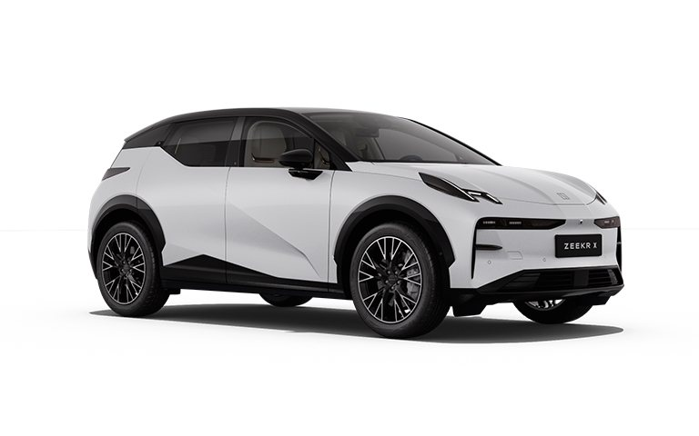

Sin resultados. Prueba con otra palabra (ej. “batería”, “carga”, “regen”).
📲 Para verla a pantalla completa: .
Manual Experto · Colombia 2026
X Flagship AWD
Doble motor · Tracción integral · MY2026
◈ Edición personalizada · Medellín / Alto de Las Palmas ◈

422hp
3.8s0–100
420km WLTP
AWD4×4
00
Cómo usar esta guía
🟢 IMPRESCINDIBLE — hay que configurarlo sí o sí.
🔵 RECOMENDADO — mejora mucho la experiencia.
🟡 OPCIONAL — a gusto de cada quien.
🔴 NO RECOMENDADO — solo casos puntuales.
Valoración
★★★★★ Excelente · ★★★☆☆ Bueno · ★☆☆☆☆ No recomendado
De dónde sale cada dato:
🟩 OFICIAL🟦 EXPERIENCIA🟧 POR CONFIRMAR
🟩 Ficha técnica / manual ZEEKR. 🟦 Uso real de autos eléctricos y lógica técnica. 🟧 Depende de tu unidad u OTA — verifícalo en tu carro. Las rutas de menú siguen ZEEKR OS y pueden cambiar con actualizaciones.
◈
Ficha técnica oficial
🟩 OFICIAL · Ficha ZEEKR X MY2026 Colombia
Motor y rendimiento
Motorización
2 motores síncronos (uno por eje)
Potencia máxima
315 kW / 422 hp
Torque máximo
543 Nm
Tracción
Integral AWD
0–100 km/h
3.8 s
Modo off-road
Sí (exclusivo Flagship)
Batería y carga
Batería
NMC · 69 kWh
Autonomía WLTP
hasta 420 km
Voltaje de operación
400 V
Carga AC (máx)
22 kW
Carga DC (máx)
150 kW
10 → 80 % en DC
33 min
Dimensiones
Largo / Entre ejes
4432 / 2750 mm
Ancho (sin espejos) / Alto
1836 / 1566 mm
Despeje / Diámetro de giro
175 mm / 11.5 m
Baúl trasero / delantero
362 / 30 L
Peso en vacío
1960 kg
Capacidad de remolque
1600 kg
Seguridad y garantía
Seguridad activa
ABS+EBD+ESP · ZEEKR AD (12 asist.)
Airbags
7
Garantía vehículo
5 años / 120.000 km
Garantía batería HV
8 años / 160.000 km
★
Configuración Sergio
◈ Optimizada para Medellín · Palmas · Viajes · Diario
Ajuste base “todoterreno” para tu día a día. Equilibra confort, autonomía y seguridad. Los capítulos siguientes explican el porqué de cada uno.
AceleraciónEstándar
DirecciónConfort
Regeneración (ciudad)Normal
Bajando Las PalmasRegen Deporte + Mantener
Clima (AC)Auto · 22–23 °C
Carga diaria (NMC)20 → 80 %
Carga antes de viaje100 % (ese día)
PreacondicionarEnchufado, desde la App
Follow-Me-Home (luces)30 s
ADAS en carreteraACC + Centrado (LCC)
🟦 EXPERIENCIA + 🟩 datos oficiales
≡
Los 30 capítulos
01 · LISTOConfiguración inicial
02 · LISTOPerfiles
03 · LISTOLlaves
04 · LISTOAcceso inteligente
05 · LISTOBloqueo automático
06 · LISTOIluminación
07 · LISTOPantallas
08 · LISTOAire acondicionado
09 · LISTOAsientos
10 · LISTOEspejos
11 · LISTOVolante
12 · LISTOModos de conducción
13 · LISTORegeneración
14 · LISTOADAS
15 · LISTOAsistente de parqueo
16 · LISTOCarga AC
17 · LISTOCarga DC
18 · LISTOBatería
19 · LISTOAutonomía
20 · LISTOOTA
21 · LISTOFunciones ocultas
22 · LISTOTrucos
23 · LISTOErrores comunes
24 · LISTOMitos y verdades
25 · LISTOSolución de problemas
26 · LISTOMantenimiento
27 · LISTOLavado
28 · NUEVOAntes de viajar
29 · NUEVODespués de viajar
30 · NUEVOQué hacer si…
+ Secciones especiales (próximas entregas): Colombia (Medellín, Las Palmas, Santa Fe, Bogotá, clima), “Lo que el concesionario nunca te explicó” y “Preguntas que todos hacen”.
01
Configuración inicial
Toca cada tarjeta para abrirla. Todo se consulta en menos de 15 segundos.
👤
Perfil y cuenta ZEEKR ID
Barra de estado ▸ Cuenta de usuario
🟢 IMPRESC.▶
Ruta
Icono de la barra de estado ▸ Cuenta de usuario ▸ Iniciar sesión (ZEEKR ID)🟩
Qué hace
Guarda en tu cuenta tus ajustes: asiento, espejos, clima, pantalla, preferencias de conducción. Al volver a entrar, el carro se reconfigura solo a tu gusto.
Cómo funciona
Inicias sesión con tu ZEEKR ID. Puedes activar Face ID (reconocimiento facial) y “cambiar de cuenta sin contraseña” para alternar perfiles rápido. El cambio de cuenta solo funciona con el carro detenido. 🟩
Por qué usarla
Es la base de todo. Sin perfil, cada ajuste se pierde y otro conductor te desconfigura el carro.
Cuándo cambiarla
Crea un perfil por conductor de la familia. Revisa que la App ZEEKR quede vinculada al mismo ID.
✔ Mi recomendación: 1 perfil “Sergio” con Face ID activo + App ZEEKR vinculada. ★★★★★
Consejo PRO
Vincula la App primero: así activas preacondicionar y ver la carga desde el celular sin tocar el carro.
Error común
Configurar todo “de invitado” sin loguear → se borra al apagar y hay que empezar de cero.
Autonomía
— Neutro
Batería
— Neutro
Seguridad
▲ Mejora
🔑
Llave y acceso
Tarjeta NFC · Llave digital (App) · Bluetooth
🟢 IMPRESC.▶
Qué hace
El ZEEKR X usa tarjeta NFC y llave digital en el celular (Bluetooth). Acercas la tarjeta al pilar o llevas el teléfono y el carro se desbloquea. 🟩
Cómo funciona
La tarjeta NFC se apoya en la zona marcada del pilar B / manija. La llave digital vive en la App ZEEKR y puedes compartir vehículo con otra persona por tiempo limitado. 🟩
Por qué / Cuándo
Ten siempre la tarjeta física como respaldo (batería del celular muerta = llave digital muerta).
✔ Recomendación: llave digital en el celular para el día a día + tarjeta NFC guardada en la billetera como respaldo. ★★★★☆
Error común
Dejar la tarjeta NFC sobre el cargador inalámbrico del carro: puede dañarse o desmagnetizarse. 🟩
Autonomía
— Neutro
Batería
— Neutro
Seguridad
▲ Mejora
💡
Iluminación exterior
Faros Full LED · Luces de acompañamiento
🔵 RECOM.▶
Qué hace
Faros Full LED con animación de encendido. La luz Follow-Me-Home deja las luces prendidas al salir con poca luz, para llegar iluminado. 🟩
Config recomendada
Faros en AUTO (prenden solos en túnel/noche). Follow-Me-Home a 30 s (opciones: 30/60/90). El detalle fino está en el Cap. 6.
✔ Sergio: AUTO + Follow-Me-Home 30 s. En Medellín (túneles, lluvia) AUTO evita ir sin luces sin darte cuenta. ★★★★★
Consejo PRO
Deja los faros en AUTO fijo: el ZEEKR sensa la luz y evita multas por circular sin luces en lluvia/túnel.
Autonomía
— Mínimo
Batería
— Mínimo
Seguridad
▲▲ Alta
❄️
Climatización (ajuste inicial)
AC digital 2 zonas · AUTO
🔵 RECOM.▶
Qué hace
Aire acondicionado digital de dos zonas. En modo AUTO, el carro decide ventilador y reparto para llegar a la temperatura que pongas. 🟩
Config recomendada
AUTO · 22–23 °C. El detalle grande (preacondicionar, protección de calor, cómo ahorra batería) va en el Cap. 8.
✔ Sergio: AUTO 22–23 °C. Preacondiciona desde la App con el carro enchufado → cabina fría sin gastar autonomía. ★★★★★ 🟦
Error común
Dejar activada la “protección contra sobrecalentamiento” siempre. Solo úsala si estacionas muchas horas al sol; si no, gasta energía sin necesidad. 🟦
Autonomía
▼ Media
Batería
— Neutro
Confort
▲▲ Alto
🪞
Espejos
Ajuste eléctrico · Plegado automático
🔵 RECOM.▶
Qué hace
Espejos eléctricos sin marco. Se pueden plegar/desplegar solos al bloquear el carro, y se guardan en tu perfil. 🟩
Config recomendada
Activa plegado automático al cerrar. Ajusta bien los espejos con tu perfil logueado para que se guarden.
✔ Sergio: plegado auto ON. En parqueaderos estrechos de Medellín protege los espejos. ★★★★☆
Consejo PRO
Ajusta espejos con el asiento ya en tu posición y logueado: quedan atados a “Sergio” y vuelven solos.
Autonomía
— Neutro
Batería
— Neutro
Seguridad
▲ Mejora
💺
Asientos (memoria)
Eléctrico · Memoria · Ventilación
🔵 RECOM.▶
Qué hace
Silla del conductor eléctrica con memoria y ventilación; lumbar eléctrico de 4 direcciones (Flagship). La posición se guarda en tu perfil. 🟩
Config recomendada
Ajusta posición + lumbar, guárdala en Memoria 1 (Sergio). Ventilación es clima de Medellín: úsala en vez de bajar mucho el AC → gastas menos. 🟦
✔ Sergio: Memoria 1 guardada + ventilación de asiento como primer recurso contra el calor. ★★★★★
Consejo PRO
Ventilar el asiento gasta muchísimo menos que enfriar toda la cabina: más autonomía y confort inmediato. 🟦
Autonomía
▲ Ahorra*
Batería
— Neutro
Confort
▲▲ Alto
*Usar ventilación de asiento en lugar de forzar el AC ahorra energía.
▤
Ajuste base según escenario
Ajuste
Medellín ciudad
Subiendo Palmas
Bajando Palmas
Carretera
Lluvia
Aceleración
Estándar
Deporte/Est.
Estándar
Estándar
Atenuado
Regeneración
Normal
Normal
Deporte
Normal
Normal
Dirección
Confort
Deporte
Confort
Confort
Confort
Clima
AUTO 22°
AUTO 22°
AUTO 22°
AUTO 22°
AUTO + desemp.
ADAS
—
—
—
ACC+LCC
ACC suave
Luces
AUTO
AUTO
AUTO
AUTO
AUTO ON
🟦 Guía práctica. El “porqué” de regeneración, modos y ADAS se desarrolla en los capítulos 12, 13 y 14.
02
Perfiles
Un “perfil” = una preferencia atada a tu ZEEKR ID. El carro se ajusta solo a ti. 🟩 Manual
🧩
Qué guarda un perfil
3 preferencias por cuenta ZEEKR ID
🟢 IMPRESC.▶
Qué guarda
Posición del asiento del conductor, espejos exteriores y HUD (head-up display). Puedes tener hasta 3 preferencias por cuenta. 🟩
Qué NO guarda
Clima, modo de conducción o volante no entran en la memoria de posición. Esos se guardan aparte por cuenta. 🟦
Antes de guardar
Carro detenido en Park (P) · sesión iniciada en la pantalla · asiento, espejos y HUD ya en tu posición. 🟩
Paso a paso
1
Detén el carro en Park (P) e inicia sesión con tu ZEEKR ID.
2
Ajusta asiento, espejos y HUD a tu gusto.
3
Barra de estado ▸ Cuenta ▸ Preferencias ▸ Guardar (suena un pitido).
✔ Sergio: “Preferencia 1 = Sergio”. Ajusta todo, luego Guardar. El carro pita al confirmar. ★★★★★
Error común
Intentar Restaurar sin estar en P: la tecla no responde fuera de Park. 🟩
🔀
4 formas de guardar / cambiar de perfil
Rutas exactas
🔵 RECOM.▶
1 · Desde tu cuenta
Barra de estado ▸ Cuenta de usuario ▸ tarjeta de Preferencias ▸ Guardar / Restaurar🟩
2 · Desde el asiento
Ajuste del asiento ▸ Conductor ▸ Guardar / Guardar como otra🟩
3 · Ventana emergente
Al mover espejo/HUD aparece un cuadro para Guardar/Restaurar la preferencia. 🟩
4 · Cambio rápido
Barra de estado ▸ (icono de cuenta) ▸ tocar el nombre de la preferencia🟩
✔ Para el día a día, la forma 4 es la más rápida: un toque y el carro se acomoda a ti. ★★★★★
Consejo PRO
“Guardar como otra preferencia” reemplaza la que elijas. Nómbralas (Sergio / Esposa / Hijo) para no pisarte una.
👥
Perfil compartido / varios conductores
Cambio de cuenta sin contraseña
🟡 OPCIONAL▶
Qué hace
Puedes editar el nombre de una preferencia y volverla compartida, o activar “cambiar cuenta sin contraseña” para alternar perfiles con un toque. El cambio de cuenta solo funciona con el carro detenido. 🟩
✔ Familia Cardona: una cuenta por conductor + Face ID. Cada quien entra y el carro se reconfigura solo. ★★★★☆
Autonomía
— Neutro
Batería
— Neutro
Confort
▲▲ Alto
03
Llaves
El ZEEKR X tiene 4 formas de abrir: llave UWB, tiradores por aproximación, tarjeta NFC y celular. 🟩
🎛️
Llave UWB (control físico)
Bloquea, desbloquea y arma el antirrobo
🟢 IMPRESC.▶
Qué hace
Botón desbloquear (abre puertas + portón y desarma antirrobo) y bloquear (cierra todo y arma antirrobo). Es la llave principal. 🟩
Cómo funciona
UWB = ubicación ultra-precisa (como un GPS de cercanía). El carro sabe si estás al lado. Puede fallar cerca de torres de radio/TV o subestaciones eléctricas. 🟩
✔ Es tu llave de respaldo obligatoria. Llévala siempre, aunque uses el celular. ★★★★★
Error común
Confiar solo en el celular. Si se descarga, la UWB es tu única forma segura de bloquear el carro. 🟩
🚪
Entrada sin llave (tiradores ocultos)
Puertas y Ventanillas ▸ Puertas
🔵 RECOM.▶
Cómo funciona
Con la UWB encima, tocas el sensor del tirador → el tirador (que va al ras de la puerta) se retrae; metes 4 dedos y la puerta se abre. Al desbloquear: intermitentes parpadean 2 veces y se despliegan los espejos. 🟩
Ruta (aproximación)
Puertas y Ventanillas ▸ Puertas ▸ Desbloqueo por aproximación / bloqueo al alejarse🟩
Extra
Desbloqueo en 2 pasos: primer toque abre solo la puerta del conductor; segundo, todas. Buena idea por seguridad. 🟩
✔ Sergio: aproximación ON + 2 pasos ON. Cómodo y seguro en la ciudad. ★★★★☆ 🟧 confirmar en tu unidad
Error común
Con frío/lluvia, hielo o mugre en el sensor del tirador puede impedir que abra. Límpialo. 🟩
💳
Tarjeta NFC
Apoyar en el pilar B (lado conductor)
🔵 RECOM.▶
Cómo funciona
Con el carro cerrado, apoyas la tarjeta en el área de detección (pilar B, lado conductor) para abrir; igual para cerrar. Ideal como respaldo en la billetera. 🟩
Cuidados (importante)
No la dobles ni cortes · no la dejes en el cargador inalámbrico · no la metas en la carcasa del celular · no la pegues con otras tarjetas (banco, transporte). Llaves extra o pérdida → Centro de Servicio ZEEKR. 🟩
✔ Sergio: tarjeta NFC guardada en la billetera como respaldo, lejos del cargador inalámbrico. ★★★★☆
📱
Llave digital (App ZEEKR) y compartir
Bluetooth · Compartir vehículo
🔵 RECOM.▶
Qué hace
Con la App vinculada (Bluetooth) abres/cierras y hasta abres el portón a distancia. También ves el estado de las puertas. 🟩
Compartir vehículo
App ZEEKR ▸ Mi vehículo ▸ (deslizar) Vehículo y OTA ▸ Compartir vehículo ▸ Crear uso compartido ▸ correo ▸ Confirmar para compartir🟩
✔ Útil para prestar el carro por tiempo limitado (familia, taller). ★★★★☆
Ojo
No puedes cancelar el uso compartido mientras la otra persona lo está usando. Compártelo solo con gente de confianza. 🟩
▤
Comparativa de llaves
Llave
Abrir
Cerrar+antirrobo
Remoto
Respaldo
UWB (física)
Sí
Sí
No
★★★★★
Aproximación
Sí
Sí
No
★★★★☆
Tarjeta NFC
Sí
Sí
No
★★★★☆
App / celular
Sí
Sí
Sí
★★★☆☆
🟦 Regla de oro: UWB + tarjeta NFC siempre encima; el celular es la comodidad, no el respaldo.
🇨🇴
Sección Colombia
Ajustes reales para tu geografía: Medellín, el Alto de Las Palmas, Santa Fe, Bogotá y el clima. Aquí es donde un eléctrico brilla… si lo manejas bien. 🟦 Experiencia + 🟩 datos
Alturas aproximadas (referencia geográfica): Medellín ≈ 1.495 m · Alto de Las Palmas ≈ 2.500 m · Santa Fe ≈ 550 m · Bogotá ≈ 2.640 m. 🟦
🏙️
Medellín · ciudad y tráfico
Comfort · Regen Media
🟢▶
El reto
Trancones y calor moderado. Un eléctrico ama el tráfico: en cada frenada recupera energía y no gasta detenido. 🟦
Ajuste
Modo Comfort, dirección Comfort, regen Media. Clima AUTO 22–23°. Ventilación de asiento antes que bajar mucho el AC.
✔ Preacondiciona desde la App con el carro enchufado antes de salir: cabina fría sin gastar autonomía. ★★★★★
Autonomía
▲ Buena
Batería
— Neutro
Confort
▲▲ Alto
⛰️
Subiendo el Alto de Las Palmas
≈ +1.000 m de ascenso
🔵▶
El reto
Subir gasta harto: estás “levantando” 2 toneladas 1.000 metros. Verás caer el % rápido — es normal, no es falla. 🟦
Ajuste
Comfort para máxima eficiencia; Sport solo si quieres respuesta inmediata al adelantar. Regen Media. El AWD sube sobrado con 543 Nm. 🟩 potencia
✔ No persigas velocidad: subir a ritmo constante ahorra mucha batería. Lo recuperas al bajar. ★★★★☆
Autonomía
▼▼ Alta baja
Batería
— Neutro
Desempeño
▲▲ Sobra
🔋
Bajando el Alto de Las Palmas
Regen Alta / ePedal — el truco
🟢▶
La joya del eléctrico
Al bajar, la regeneración convierte la bajada en carga: el motor frena y devuelve energía a la batería. Recuperas buena parte de lo que gastaste subiendo. 🟦 + 🟩 (regen 2 niveles + ePedal)
Ajuste
Regen Alta o ePedal (un solo pedal). Frenas con el motor, casi no tocas el freno. 🟩
✔ Bajar en regen Alta protege los frenos (evita que se recalienten) y suma kilómetros gratis. ★★★★★
Error común
Bajar en punto muerto “por ahorrar”: en un eléctrico no aplica y pierdes toda la regeneración. Deja que el motor frene. 🟦
Autonomía
▲▲ Recupera
Frenos
▲▲ Protege
Seguridad
▲ Mejora
🌵
Santa Fe de Antioquia · calor
Bajada larga + ≈ 33 °C
🔵▶
El reto
Bajas al calor (Túnel de Occidente). El descenso te regala regen; el calor pide AC. Al regresar, subir con calor es lo que más gasta. 🟦
Ajuste
Bajando: regen Alta. Allá: parquea a la sombra, AC AUTO. De regreso: sal con buena carga y ritmo constante.
✔ Llega con ≥ 60–70 % si piensas devolverte el mismo día; el ascenso de vuelta consume fuerte. ★★★★☆ 🟧 estimación
Autonomía
▼ Ida barata / vuelta cara
Batería
— Vigila calor
Confort
▲ Bueno
🛣️
Viaje a Bogotá
Carretera larga y de montaña
🔵▶
El reto
Trayecto largo y montañoso. La autonomía WLTP (420 km) es de laboratorio: en montaña con AC cuenta con menos en la práctica. Planea paradas de carga DC. 🟧 estimación real · 🟩 420 km WLTP
Ajuste
Aceleración Estándar, ACC + centrado de carril (LCC) para descansar. Regen Normal en autopista (no “frenes” en plano). Revisa el Cap. 28 “Antes de viajar”.
✔ Planea la ruta por % de batería, no por “creo que llego”. Carga DC (150 kW) 10→80% en ≈ 33 min. ★★★★☆ 🟩
Autonomía
▼ Montaña
Batería
— Precalienta antes de DC
Seguridad
▲▲ ADAS
🌦️
Clima: calor · frío · lluvia
Ajustes rápidos
🔵▶
☀️ Calor (Medellín, Santa Fe)
Preacondiciona enchufado, parquea a la sombra, usa ventilación de asiento. La “protección contra sobrecalentamiento” solo si dejas el carro muchas horas al sol. 🟦
❄️ Frío (Bogotá, Palmas de noche)
La batería rinde algo menos en frío y la regeneración puede limitarse con batería muy fría. Precalienta enchufado antes de salir. 🟦
🌧️ Lluvia
El AWD ayuda con la tracción, pero baja la regen a Media (regen Alta en piso mojado puede sentirse brusca). Luces en AUTO, más distancia, ESP siempre activo. 🟦
✔ Regla simple: preacondicionar enchufado resuelve calor y frío sin tocar tu autonomía. ★★★★★
▤
Resumen Colombia
Escenario
Aceleración
Regen
Autonomía
Clave
Medellín ciudad
Estándar
Normal
▲ Buena
Preacondicionar
Subir Palmas
Estándar/Deporte
Normal
▼▼ Baja
Ritmo constante
Bajar Palmas
Estándar
Deporte
▲▲ Recupera
Cuida frenos
Santa Fe
Estándar
Deporte (baj.)
▼ Vuelta cara
Salir cargado
Bogotá viaje
Estándar
Normal
▼ Montaña
Planear carga DC
Lluvia
Atenuado
Normal
— Normal
Distancia + luces
🟧 Los rangos de autonomía real son estimaciones (dependen de peso, velocidad, AC y conducción). La ficha oficial declara 420 km WLTP en condiciones de laboratorio.
04
Acceso inteligente
La “coreografía” de llegada y salida: el carro te recibe y te despide solo. Todo se configura en Luces y Puertas y Ventanillas. 🟩
✨
Llegada: luz de aproximación + bienvenida
Luces ▸ Luces exteriores
🔵 RECOM.▶
Qué hace
Al acercarte o desbloquear, las luces exteriores se encienden 30 s para iluminar el camino (luz de aproximación). La secuencia de bienvenida añade un show de luces + sonido. 🟩
Ruta
Luces ▸ Luces exteriores ▸ Luz de aproximación / Secuencia de bienvenida🟩
Opciones de bienvenida
Apagado · Tenue · Divertido · Refrescante. 🟩
Paso a paso
1
Ve a Luces ▸ Luces exteriores.
2
Activa Luz de aproximación (30 s al acercarte).
3
Elige la Secuencia de bienvenida: tenue / divertido / refrescante.
✔ Sergio: luz de aproximación ON (útil de noche); bienvenida a gusto. ★★★★☆
Ojo (dato del manual)
Si activas aproximación + bienvenida a la vez, se anula la luz de cortesía. Elige una experiencia. 🟩
Autonomía
— Mínimo
Batería
— Mínimo
Seguridad
▲ Ves mejor
🖐️
Manos libres: aproximación y 2 pasos
Puertas y Ventanillas ▸ Puertas
🔵 RECOM.▶
Qué hace
Con la llave UWB encima: el carro se abre al acercarte y se cierra al alejarte. Los tiradores (al ras) salen solos y los espejos se despliegan. 🟩
Ruta
Puertas y Ventanillas ▸ Puertas ▸ Desbloqueo por aproximación / bloqueo al alejarse · Desbloqueo en 2 pasos🟩
Cuándo cambiarla
2 pasos ON = primer toque abre solo tu puerta; segundo, todas. Más seguro en la calle. 🟩
Paso a paso
1
Ve a Puertas y Ventanillas ▸ Puertas.
2
Activa Desbloqueo por aproximación / bloqueo al alejarse.
3
Activa Desbloqueo en 2 pasos (1er toque tu puerta, 2º todas).
4
Lleva la llave UWB encima para que funcione.
✔ Sergio: aproximación ON + 2 pasos ON. Comodidad con control. ★★★★☆ 🟧 confirmar en tu unidad
Error común
Sensor del tirador con mugre/agua no responde. Y recuerda: la UWB puede fallar cerca de antenas o subestaciones. 🟩
05
Bloqueo automático
Que el carro se cierre solo es seguridad, sobre todo en ciudad. 🟩 + 🟦
🔒
Bloqueo automático al conducir
Se cierra solo al arrancar
🟢 IMPRESC.▶
Qué hace
Con todas las puertas cerradas, al superar cierta velocidad el carro bloquea solo. Evita que abran una puerta en un semáforo. 🟩
Paso a paso
1
Ve a Puertas y Ventanillas ▸ Puertas.
2
Activa Bloqueo automático (se cierra solo al superar cierta velocidad).
✔ Sergio: siempre ON. En Medellín/Bogotá es seguridad básica en trancones. ★★★★★ 🟦
Autonomía
— Neutro
Batería
— Neutro
Seguridad
▲▲ Alta
🔓
Desbloqueo automático al salir
Puertas y Ventanillas ▸ Puertas
🟡 OPCIONAL▶
Qué hace
Al estacionar y poner Park, las puertas se desbloquean solas para que salgas sin tocar nada. 🟩
Ruta
Puertas y Ventanillas ▸ Puertas ▸ Desbloqueo automático al salir🟩
El dilema (seguridad)
Cómodo, pero deja el carro abierto apenas frenas. En zonas con inseguridad conviene OFF y abrir tú manualmente. 🟦
Paso a paso
1
Ve a Puertas y Ventanillas ▸ Puertas.
2
Activa/desactiva Desbloqueo automático al salir.
✔ Sergio: OFF para ciudad; ON solo en garaje/casa. Tú decides cuándo se abre. ★★★☆☆
Comodidad
▲ Sube
Seguridad
▼ Baja (ON)
Batería
— Neutro
🚶
Bloqueo al alejarte (walk-away)
Con llave UWB
🔵 RECOM.▶
Qué hace
Al alejarte con la UWB tras cerrar las puertas, el carro se bloquea solo. Se activa junto con el desbloqueo por aproximación (Cap. 4). 🟩
Cuándo NO
Si sueles quedarte cerca del carro (lavándolo, cargando cosas) puede cerrarse cuando no quieres. Ahí, mejor OFF. 🟦
✔ Verifica siempre con un tirón de manija que quedó cerrado. La costumbre evita sustos. ★★★★☆
06
Iluminación
Todo vive en Luces ▸ Luces exteriores y Luces ▸ Luces interiores (o en el menú desplegable “Control de luces”). 🟩
🔆
Luces automáticas (AUTO)
Sensor de lluvia/luz
🟢 IMPRESC.▶
Cómo funciona
Un sensor en la parte alta del parabrisas mide la luz: prende las luces de cruce solo al oscurecer (túnel, noche) y las apaga con luz suficiente. 🟩
Ruta
Luces ▸ Luces exteriores ▸ Luz automática🟩
Paso a paso
1
Ve a Luces ▸ Luces exteriores ▸ Luz automática → ON.
2
Atajo: actívala desde el menú desplegable ▸ Control de luces.
✔ Déjalo siempre en AUTO. En Medellín (túneles, aguaceros) evita ir sin luces por descuido. ★★★★★
Cuidado
No tapes el sensor del parabrisas (calcomanías, objetos): afecta luces automáticas y limpiaparabrisas. 🟩
🌟
Luz alta automática (AHB)
Palanca · antideslumbrante
🔵 RECOM.▶
Qué hace
Con AHB activo, el carro pone luz alta en carretera oscura y la baja solo al detectar un carro de frente, para no encandilar. 🟩
Cómo activarlo
Con el carro andando y luces de cruce ON: empuja la palanca hacia adelante 2 veces. Para apagar: tira la palanca hacia el volante. 🟩
Paso a paso
1
Enciende las luces de cruce (o déjalas en AUTO) con el carro en marcha.
2
Empuja la palanca hacia adelante 2 veces → AHB activo.
3
Para apagarlo, tira la palanca hacia el volante.
✔ Ideal en carretera a Bogotá de noche. En ciudad iluminada no aporta. ★★★★☆
Ojo
Es una ayuda, no un piloto: con niebla o lluvia fuerte puede fallar. Sigue tú atento a cambiar la luz. 🟩
Autonomía
— Neutro
Batería
— Neutro
Seguridad
▲▲ Noche
🏠
Follow-Me-Home (sígueme a casa)
30 / 60 / 90 s
🔵 RECOM.▶
Qué hace
Al salir del carro con poca luz, las luces siguen encendidas un rato para iluminarte el camino hasta la casa. 🟩
Ruta
Luces ▸ Luces exteriores ▸ Follow-Me-Home · Duración: Off / 30 / 60 / 90 s 🟩
Paso a paso
1
Ve a Luces ▸ Luces exteriores ▸ Follow-Me-Home.
2
Elige la duración: 30 / 60 / 90 s (o Off).
✔ Sergio: 30 s. Suficiente para llegar a la puerta sin gastar de más. ★★★★☆
Dato corregido
El manual oficial ofrece 30/60/90 s (no 15 s). En una guía previa figuraba 15 s: aquí queda con el valor oficial. 🟩
🧊
Luz ambiental “Bloque de hielo”
Luces ▸ Luces interiores
🟡 OPCIONAL▶
Qué hace
Iluminación interior en puertas, consola y bocinas (efecto “Bloque de hielo”, propio del Flagship). Ajustas color, brillo y forma. 🟩
Formas
Monocromo · Respiración · Programa de música (baila con el sonido). La “respiración” solo funciona en monocromo. 🟩
Ruta
Luces ▸ Luces interiores ▸ Luz ambiental (color / brillo / forma) · aquí también van luz de cortesía y despedida🟩
✔ A gusto. Un color tenue mejora el ambiente de noche sin distraer. ★★★☆☆
▤
Referencia rápida de luces
Función
Dónde / cómo
Sergio
Luz automática
Luces ▸ Exteriores
AUTO
Luz alta auto (AHB)
Palanca ×2 adelante
ON carretera
Follow-Me-Home
Luces ▸ Exteriores
30 s
Aproximación
Luces ▸ Exteriores
ON
Antiniebla trasero
Luces ▸ Exteriores
Solo niebla
Luz ambiental
Luces ▸ Interiores
A gusto
Adelantamiento
Palanca al volante
Al pasar
Emergencia (estrella)
Botón · auto en choque
—
🟩 Rutas y comportamientos tomados del manual oficial ZEEKR X. Los intermitentes: palanca suave = 3 parpadeos; a fondo = fijo.
07
Pantallas
Tres pantallas: central 14.6", clúster 8.8" y HUD en el parabrisas. 🟩
📺
Las 3 pantallas
Central · Clúster · HUD
🔵 RECOM.▶
Central 14.6" FHD
El “cerebro”: menús, mapa, clima, cámaras. Esquina inferior izquierda = volver al inicio. 🟩
Clúster 8.8"
Frente al volante: velocidad, batería, marcha, testigos. 🟩
Menú desplegable
Desliza desde arriba en la central para accesos rápidos: control de luces, brillo, aire, HUD. 🟩
✔ Aprende el gesto de deslizar desde arriba: es tu “control rápido” para todo. ★★★★☆
🪟
HUD (realidad aumentada)
Conducción ▸ HUD · tecla derecha del volante
🔵 RECOM.▶
Qué hace
Proyecta velocidad, asistencias y navegación en el parabrisas, para no bajar la vista. Es de realidad aumentada (exclusivo Flagship). 🟩
Ruta / ajuste
Menú desplegable ▸ HUD · o Conducción ▸ HUD
Con la tecla direccional derecha del volante: izq/der = brillo · arriba/abajo = altura. La posición se guarda en tu perfil (Cap. 2). 🟩
Paso a paso
1
Abre el ajuste: menú desplegable ▸ HUD (o Conducción ▸ HUD).
2
Actívalo (ON).
3
Con la tecla direccional derecha del volante: izq/der = brillo, arriba/abajo = altura.
✔ Ajusta la altura sentado en tu posición real de manejo, una vez, y quedará memorizada. ★★★★★
Seguridad (manual)
No pongas el HUD tan alto/brillante que tape la vista, ni te quedes mirándolo: puedes perder de vista peatones. 🟩
🔅
Brillo, CarPlay y Android Auto
Pantalla ▸ Brillo automático
🟡 OPCIONAL▶
Brillo
Pantalla ▸ (deslizadores) + Brillo automático
Ajusta central, clúster y retroiluminación; con Brillo automático se adapta a la luz. 🟩
Celular
CarPlay y Android Auto inalámbricos: conecta el teléfono sin cable. 🟩 ficha
✔ Sergio: Brillo automático ON. De noche baja solo y no encandila. ★★★★☆
08
Aire acondicionado
Clima digital de 2 zonas + AQS con filtro N95. En Medellín, tu mejor aliado contra el calor sin matar la autonomía. 🟩 + 🟦
❄️
AUTO + preacondicionar (el truco)
App ZEEKR ▸ Aire acondicionado
🟢 IMPRESC.▶
Qué hace
En AUTO, el carro controla ventilador y reparto para llegar a la temperatura que pongas. Desde la App puedes prenderlo y programarlo a distancia. 🟩
El truco de oro
Preacondiciona con el carro enchufado: enfría la cabina usando la corriente del enchufe, no la batería. Llegas a un carro fresco con la autonomía intacta. 🟩 (App) · 🟦 (impacto)
En el carro: pon el clima en AUTO y la temperatura (22–23°).
2
Con el carro enchufado, abre la App ZEEKR ▸ Aire acondicionado.
3
Enciéndelo 5–10 min antes de salir (o programa la hora).
✔ Sergio: AUTO 22–23°. Antes de salir de casa/oficina (enchufado), enfría desde la App 10 min. ★★★★★
Autonomía
▲ Si enchufado
Batería
— Neutro
Confort
▲▲ Alto
🌬️
Flujo y recirculación
Interna / Externa / Automática
🔵 RECOM.▶
Flujo de aire
Elige a dónde sale el aire (cara, pies, parabrisas). En AUTO lo decide el carro; si tocas manual, sale de AUTO. Dirección fina con “modo libre” deslizando. 🟩
Recirculación
Interna (recircula el aire de adentro, enfría más rápido) · Externa (mete aire de afuera) · Automática. 🟩
✔ Con calor fuerte: arranca en interna para enfriar rápido, luego pásate a auto. ★★★★☆
Aviso (manual)
No dejes recirculación interna mucho tiempo: empeora la calidad del aire (se enrarece). 🟩
🫧
Aire limpio (AQS + N95)
Filtro anti-humo · zona limpia
🔵 RECOM.▶
Qué hace
El sensor AQS detecta contaminación afuera y cierra la entrada de aire, recirculando con filtro N95. Ideal detrás de buses/camiones o en trancón. Lo ves en la barra de estado. 🟩
Zona limpia (bonus)
Si el carro estuvo +3 h cerrado, al abrir la puerta mete aire fresco para bajar la temperatura antes de subirte. 🟩
✔ Déjalo trabajar solo. En Medellín/Bogotá filtra el humo del tráfico sin que hagas nada. ★★★★★
Autonomía
— Neutro
Salud
▲▲ Aire limpio
Confort
▲ Bueno
🌫️
Desempañado / descongelación
Teclas inferiores de la central
🔵 RECOM.▶
Qué hace
Quita el vaho del parabrisas delantero y trasero. Botones en la parte inferior de la pantalla central. 🟩
Dato útil
Al activar el desempañado delantero, el A/A se enciende solo y el aire va a MAX (son teclas enlazadas). El trasero también activa la calefacción de asientos según el manual. 🟩
✔ En lluvia de Medellín, un toque al desempañador delantero despeja el vidrio en segundos. ★★★★★
Seguridad
Nunca arranques con el parabrisas empañado o con vaho: primero despeja. 🟩
🐾
Modo Mascota y Modo Descanso
Clima con el carro estacionado
🟡 OPCIONAL▶
Modo Mascota
Mantiene el clima y una pantalla avisando que hay una mascota adentro, para dejarla un rato con temperatura segura. 🟩
Modo Descanso
Ajusta el ambiente para descansar dentro del carro (clima + confort). 🟩
✔ Útil, pero con criterio: son ayudas, no dejan de vigilar por ti. ★★★☆☆
Aviso (manual)
El Modo Mascota es auxiliar: no dejes mascotas o personas mucho tiempo solas confiando solo en él. 🟩
🟦 Regla de calor Medellín: ventila el asiento (Cap. 9) + preacondiciona enchufado. Enfriar toda la cabina a punta de batería es lo que más autonomía te quita.
09
Asientos
Eléctricos con memoria, ventilación, calefacción y masaje. Ruta base: Confort del asiento. 🟩
💺
Ajuste, memoria y lumbar
Botón lateral + perfil
🔵 RECOM.▶
Cómo funciona
Botón lateral: altura del cojín, adelante/atrás y ángulo del respaldo. El Flagship suma lumbar eléctrico de 4 direcciones. Todo se guarda en tu perfil (Cap. 2). 🟩
Paso a paso
1
Inicia sesión y pon el carro en Park (P).
2
Acomoda asiento, espejos y HUD a tu gusto.
3
Confort del asiento ▸ Conductor ▸ Guardar (queda en tu perfil).
✔ Ajusta una vez con tu perfil logueado → Memoria 1 “Sergio”. El carro te acomoda solo. ★★★★★
Seguridad (manual)
No ajustes el asiento en movimiento. Déjalo lo bastante atrás para pisar bien los pedales. 🟩
🧊
Ventilación (calor)
Confort del asiento ▸ Climatización del asiento
🟢 IMPRESC.▶
Qué hace
Sopla aire fresco por el asiento. Es tu arma #1 contra el calor de Medellín. También se activa desde la App. 🟩
Ruta
Confort del asiento ▸ Climatización del asiento ▸ Ventilación (nivel)🟩
Paso a paso
1
Ve a Confort del asiento ▸ Climatización del asiento.
2
Sube el nivel de ventilación del conductor (o hazlo desde la App).
✔ Sergio: ventilación antes que bajar el AC. Fresco inmediato gastando muchísimo menos. ★★★★★ 🟦
Autonomía
▲ Ahorra
Batería
— Neutro
Confort
▲▲ Alto
🔥
Calefacción (frío)
Niveles 1 · 2 · 3
🟡 OPCIONAL▶
Qué hace
Calienta el asiento en clima frío (Bogotá, páramos, Palmas de noche). Niveles 1-2-3. Desde la App puedes precalentar antes de subir. 🟩
Ruta
Confort del asiento ▸ Climatización del asiento ▸ Calefacción (1/2/3)🟩
Paso a paso
1
Ve a Confort del asiento ▸ Climatización del asiento.
2
Elige el nivel de calefacción 1 · 2 · 3 (o precaliéntalo desde la App).
✔ Truco de eficiencia: calienta el asiento (y el volante) en vez de subir el AC a full → gastas menos batería en frío. ★★★★☆ 🟦
Aviso (manual)
No uses la calefacción con quien no perciba bien la temperatura (bebés, enfermos): riesgo de quemadura. 🟩
💆
Masaje y bloqueo infantil
Confort del asiento ▸ Vibración
🟡 OPCIONAL▶
Masaje
Intensidad baja-media-alta y varios modos. Desde el botón lateral (gira el selector) o en pantalla. 🟩
Confort del asiento ▸ Vibración
Bloqueo infantil
Bloquea las puertas traseras para que los niños no las abran. 🟩
Ajuste de puertas ▸ Bloqueo infantil (o control rápido del desplegable)
✔ Con niños atrás: bloqueo infantil ON siempre. El masaje, para el trancón. ★★★★☆
▤
Confort del asiento · resumen
Función
Ruta
Cuándo
Sergio
Memoria
Perfil / botón
Siempre
Memoria 1
Ventilación
Confort ▸ Climatización
Calor
1er recurso
Calefacción
Confort ▸ Climatización
Frío
Nivel 1–2
Masaje
Confort ▸ Vibración
Trancón
A gusto
Bloqueo infantil
Ajuste de puertas
Con niños
ON
🟩 Rutas y niveles del manual oficial ZEEKR X. Ventilación y calefacción también se controlan desde la App ZEEKR (útil para preacondicionar).
10
Espejos
Exteriores eléctricos (con memoria) e interior electrocrómico que se oscurece solo. 🟩
🪞
Espejos exteriores: ajuste y memoria
Conducción ▸ (ajuste retrovisor) · volante
🔵 RECOM.▶
Cómo funciona
Abres el ajuste desde el menú desplegable o en Conducción, eliges izquierdo/derecho y mueves con la tecla direccional derecha del volante. Se guarda en tu perfil (Guardar / Restaurar). 🟩
Ruta
Menú desplegable ▸ (icono espejos) · o Conducción ▸ ajuste de retrovisor🟩
✔ Ajústalos logueado y en Park → quedan en “Sergio” y vuelven solos. Plegado automático al cerrar: ON. ★★★★☆
Cuidado (manual)
No muevas el cristal del espejo con la mano: daña el motorcito. Ajústalo siempre desde el volante/pantalla. 🟩
🌡️
Calefacción de espejos
Va con el desempañado trasero
🔵 RECOM.▶
Qué hace
Quita rápido la niebla y la escarcha de los espejos. Comparte botón con el desempañado/deshielo trasero: al activar ese, se calientan los espejos. 🟩
✔ En lluvia de Medellín o frío de Bogotá, un toque al desempañado trasero te despeja vidrio y espejos. ★★★★☆
Autonomía
— Mínimo
Batería
— Mínimo
Seguridad
▲ Ves mejor
🌙
Retrovisor interior automático
Electrocrómico · anti-deslumbre
🔵 RECOM.▶
Qué hace
Se oscurece solo cuando el carro de atrás te apunta con las luces, para no encandilarte. Deja de atenuarse en reversa (R) o apagado. 🟩
✔ No tienes que hacer nada: trabaja solo de noche. ★★★★★
Cuidado (manual)
Tiene un sensor: no lo limpies con químicos fuertes ni cuelgues cosas del espejo. 🟩
11
Volante
Ajuste manual, teclas multifunción, asistente de voz y calefacción. 🟩
🎚️
Ajuste del volante
Palanca · solo con el carro parado
🔵 RECOM.▶
Cómo
Empuja la palanca de bloqueo hacia abajo, acomoda el volante (arriba/abajo y adelante/atrás), y sube la palanca para bloquear. 🟩
✔ Postura correcta: brazos ligeramente flexionados, muñeca alcanza el aro. Ajusta con el carro parado. ★★★★★
Seguridad (manual)
Asegúrate de que quede bien bloqueado (muévelo para probar). Nunca lo ajustes en movimiento. 🟩
🔘
Teclas y asistente de voz
Multifunción · personalizables · IA
🔵 RECOM.▶
Teclas direccionales
Las teclas izquierda/derecha son multifunción: con ellas ajustas HUD, espejos y el nivel de regeneración según lo que tengas activo en pantalla. 🟩
Personalizables
Puedes asignar funciones (pitido, DVR/grabar clip, etc.) a las teclas de personalización. 🟩
Asistente de voz (IA)
Botón del asistente en el volante (o dilo por voz) para clima, mapa, llamadas sin soltar el volante. 🟩 + ficha
✔ Aprende una sola cosa: la tecla derecha del volante ajusta el HUD y los espejos. ★★★★☆
♨️
Volante calefactable
Por App · clima frío
🟡 OPCIONAL▶
Qué hace
Calienta el aro en frío (Bogotá, páramos). Puedes precalentarlo desde la App antes de subir. 🟩
✔ Truco de eficiencia en frío: volante + asiento calientes gastan menos que subir el AC a full. ★★★★☆ 🟦
Dato (manual)
La calefacción del volante no funciona con el modo de aceleración Atenuado activado. 🟩
12
Modos de conducción
Aquí está la verdad: el ZEEKR X no tiene un botón único “Sport/Eco”. Tiene 4 ajustes independientes en Conducción. 🟩
◈ Traducción de términos (importante)
En capítulos anteriores usé nombres coloquiales (Comfort/Eco/Sport) para que se entendiera. Estos son los nombres reales del menú: 🟩
“Eco / suave”Aceleración: Atenuado
“Comfort / normal”Aceleración: Estándar
“Sport”Aceleración: Deporte
“ePedal / un pedal”Estacionamiento: Mantener
“Regen alta”Regeneración: Deporte
⚡
Modo de aceleración
Conducción ▸ Aceleración
🟢 IMPRESC.▶
Atenuado (Sutil)
Respuesta suave del acelerador → más autonomía y marcha relajada. Ideal ciudad/lluvia. Ojo: desactiva el volante calefactable. 🟩
Estándar
Respuesta equilibrada. Tu modo del día a día.🟩
Deporte
Respuesta rápida, todo el empuje del AWD (422 hp). Para adelantar o disfrutar. Gasta más. 🟩
Paso a paso
1
Ve a Conducción en la pantalla.
2
En Aceleración, elige Atenuado / Estándar / Deporte.
✔ Sergio: Estándar siempre; Deporte puntual para adelantar en Las Palmas; Atenuado en lluvia o para exprimir autonomía. ★★★★★
Autonomía
▲ Atenuado
Desempeño
▲▲ Deporte
Seguridad
— Igual
🕹️
Asistencia a la dirección
Conducción ▸ Dirección
🔵 RECOM.▶
Confort
Volante liviano, gira con poco esfuerzo. Perfecto para ciudad y parquear. 🟩
Normal / Deporte
Normal = medio. Deporte = volante más pesado y firme, mejor tacto en carretera rápida. 🟩
Paso a paso
1
Ve a Conducción ▸ Dirección.
2
Elige Confort / Normal / Deporte (qué tan pesado el volante).
✔ Sergio: Confort en Medellín; prueba Deporte en carretera si te gusta el volante firme. ★★★★☆
La dirección no afecta autonomía ni potencia: es solo cuánta fuerza haces al girar.
Al soltar, el carro sigue rodando suave (como “punto muerto”). Se siente como un carro normal. 🟩
Mantener (= ePedal)
Al soltar, frena hasta detenerse solo y activa Autohold. Manejas casi con un solo pedal. Recupera más energía. 🟩
Paso a paso
1
Ve a Conducción ▸ Estacionamiento (comportamiento al soltar el acelerador).
2
Elige Arrastrar (rueda libre) o Mantener (frena y se detiene solo = ePedal).
✔ Sergio: Mantener (ePedal) para ciudad y bajar Las Palmas (máxima recuperación y menos freno). ★★★★★
Consejo PRO
Regeneración + Mantener = frenas poquísimo con el pedal → cuidas pastillas y sumas kilómetros. Detalle completo en Cap. 13. 🟦
Ojo (manual)
El frenado regenerativo es ayuda, no reemplaza el freno. En emergencia, pisa el pedal. 🟩
🏔️
Nieve, Off-road y tracción AWD
Conducción ▸ Modo nieve · Off-road
🟡 OPCIONAL▶
AWD inteligente
Tu carro va como tracción trasera en ciudad (más eficiente) y pasa a 4×4 solo cuando exiges potencia, aceleras fuerte o hay poco agarre. 🟩
Modo Nieve
Para hielo/nieve. En Colombia casi nunca lo usarás (solo páramos muy fríos). Desactiva modos de aceleración, Mantener, ACC y LCC. 🟩 + 🟦
Modo Off-road
Exclusivo del Flagship AWD: para destapado/barro. Úsalo solo fuera de asfalto. 🟩 ficha
✔ Para tus fincas/destapados: Off-road puntual. En Palmas/ciudad, deja que el AWD trabaje solo. ★★★★☆
★
Configuración Sergio (oficial)
Situación
Aceleración
Dirección
Regen
Al soltar
Ciudad Medellín
Estándar
Confort
Normal
Mantener
Subir Palmas
Estándar/Deporte
Confort
Normal
Arrastrar
Bajar Palmas
Estándar
Confort
Deporte
Mantener
Carretera
Estándar
Normal/Dep.
Normal
Arrastrar
Lluvia
Atenuado
Confort
Normal
Mantener
🟩 Nombres exactos del menú Conducción del ZEEKR X. La regeneración a fondo (cuánto recupera, cuándo NO funciona) va en el Cap. 13.
13
Regeneración
Frenar “devolviendo” energía a la batería. Tu mayor aliado bajando Las Palmas. 🟩 + 🟦
🔋
Qué es y cuánto recupera
Conducción ▸ Regeneración: Normal / Deporte
🟢 IMPRESC.▶
Cómo funciona
Al soltar el acelerador o frenar, el motor trabaja al revés (como dínamo) y convierte el movimiento en electricidad que vuelve a la batería, sumando autonomía. 🟩
Los 2 niveles
Normal: retención suave, marcha cómoda. Deporte: retención fuerte al soltar (frena solo más, puede sentirse brusco al inicio). 🟩
Paso a paso
1
Ve a Conducción ▸ Regeneración.
2
Elige Normal (suave) o Deporte (retención fuerte al soltar).
Cuando la regen frena fuerte, las luces de freno se encienden solas para avisar al de atrás. 🟩
Autonomía
▲▲ Suma
Frenos
▲▲ Protege
Batería
— Cuida
🚫
Cuándo NO funciona (clave)
Batería llena o muy fría · ABS/ESP
🔵 RECOM.▶
Según el manual
La regen se corta o baja si: se activa el ABS, se activa el ESP, o vas a muy baja velocidad en modo “Arrastrar”. Y depende del estado de la batería, el nivel elegido y la velocidad. 🟩
El detalle que casi nadie sabe
Con la batería llena (100%) o muy fría, casi no hay dónde meter la energía → la regen se reduce y frenarás más con el pedal. 🟦 + 🟩
✔ Truco Palmas: si vas a bajar, no salgas al 100%. Con ~80–90% la regen recupera de sobra y frenas con el motor. ★★★★★ 🟦
Seguridad (manual)
La regeneración es ayuda, no reemplaza el freno. En emergencia o pendiente fuerte, pisa el pedal. 🟩
🦶
Un solo pedal (Regen + Mantener)
La técnica para Las Palmas
🔵 RECOM.▶
La combinación
Regen Deporte + al soltar Mantener = manejas casi con un pedal: sueltas y el carro frena y recupera; casi no tocas el freno. 🟩
✔ Bajando Las Palmas así: recuperas kilómetros, los frenos no se recalientan y llegas abajo con más % del que crees. ★★★★★ 🟦
Autonomía
▲▲ Recupera
Frenos
▲▲ Fríos
Seguridad
▲ Control
14
ADAS · ZEEKR AD
12 asistencias a la conducción. Todas se configuran en ZEEKR AD ▸ Conductor inteligente. 🟩
⚠️ LO MÁS IMPORTANTE
Son ayudas, NO conducción autónoma. Manos al volante y ojos al frente siempre. No reaccionan bien a peatones, motos, animales ni en mal clima. Tú eres el responsable. 🟩
🛣️
ACC · Crucero adaptativo
Mantiene velocidad y distancia
🔵 RECOM.▶
Qué hace
Mantiene la velocidad que pongas y la distancia con el carro de adelante (acelera y frena solo). Funciona entre 30 y 150 km/h. 🟩
Cómo
Se activa con la palanca del crucero; ajustas velocidad e intervalo de distancia. Si frenas, se desactiva; lo reactivas con el volante. 🟩
Paso a paso
1
Actívalo en ZEEKR AD ▸ Conductor inteligente.
2
En marcha (30–150 km/h), pulsa la palanca del crucero para fijar la velocidad actual.
3
Ajusta velocidad (+/−) e intervalo de distancia con las teclas del volante.
4
Si frenas se pausa; reactívalo con el botón del volante.
✔ Oro puro en el viaje a Bogotá: reduce el cansancio muchísimo. ★★★★★
🎯
LCC · Centrado de carril
Mantiene el carro centrado
🔵 RECOM.▶
Qué hace
Trabaja con el ACC y mueve suavemente el volante para mantenerte centrado en el carril. 🟩
Cuándo NO
No en intersecciones, ni con lluvia fuerte, ni donde no hay líneas claras, ni con peatones/ciclistas cerca. 🟩
Paso a paso
1
En ZEEKR AD ▸ Conductor inteligente, activa LCC (centrado de carril).
2
Con el ACC ya activo y líneas visibles, el volante se centra solo.
3
Manos al volante siempre; sin líneas o en curva cerrada, toma el control.
✔ En autopista con buenas líneas, ACC + LCC = viaje relajado. En vías de montaña sin líneas, apágalo. ★★★★☆
🛡️
Los guardianes (se activan solos)
BSD · RCTA/FCTA · DOW · Frenado emergencia
🟢 IMPRESC.▶
Punto ciego (BSD)
Avisa si viene un carro en tu punto ciego al cambiar de carril. 🟩
Tráfico cruzado (RCTA/FCTA)
Al salir de reversa de un parqueo, avisa de carros que cruzan por los lados. 🟩
Apertura de puertas (DOW)
Avisa antes de abrir la puerta si viene una moto o ciclista por detrás. Clave en Medellín.🟩 + 🟦
Frenado de emergencia (CMSF)
Si detecta choque frontal inminente, frena para reducir el golpe. 🟩
✔ Déjalos siempre activos. Trabajan de fondo y un día te salvan de un raye o un golpe. ★★★★★
👁️
DPS · Monitor de fatiga
ZEEKR AD ▸ Conductor inteligente
🔵 RECOM.▶
Qué hace
Una cámara vigila tus ojos/cara y te avisa si detecta sueño o distracción. No detecta si tienes el intermitente puesto. 🟩
Paso a paso
1
Ve a ZEEKR AD ▸ Conductor inteligente.
2
Activa el DPS (monitor de fatiga).
✔ En viajes largos, hazle caso: si te avisa, para y descansa. ★★★★☆
Nota (manual)
El DPS solo avisa, no toma el control. La responsabilidad de parar a descansar es tuya. 🟩
▤
Las 12 asistencias
Sigla
Qué hace
Sergio
ACC
Crucero adaptativo
Carretera
LCC
Centrado de carril
Autopista
LKA
Mantenimiento de carril
ON
BSD
Punto ciego
ON
RCTA/FCTA
Tráfico cruzado
ON
DOW
Aviso apertura puertas
ON
CMSF
Frenado de emergencia
ON
DPS
Fatiga del conductor
ON
🟩 Nombres de la ficha oficial (ZEEKR AD, 12 asistencias). Ruta común: ZEEKR AD ▸ Conductor inteligente.
15
Asistente de parqueo
Cámara 360, parqueo automático y freno de reversa. Adiós a rayar los rines. 🟩
🎥
Cámara 360 (visión envolvente)
4 cámaras · 2D/3D · modelo transparente
🟢 IMPRESC.▶
Qué hace
4 cámaras arman una vista desde arriba del carro en la pantalla, para parquear sin golpear. Tiene modo 2D y 3D y hasta un “modelo transparente” para ver el piso debajo del carro. 🟩
Cómo se abre
Al poner reversa (R), por voz, con el botón en pantalla, o sola en canales estrechos (<12 km/h) y al usar el intermitente a baja velocidad. 🟩
Paso a paso
1
Pon reversa (R), o toca el ícono en la barra, o dilo por voz.
2
Cambia entre 2D / 3D tocando la pantalla.
3
En ajustes activa modelo transparente y líneas de guía.
✔ Sergio: úsala siempre para parquear. En garajes estrechos de Medellín, el modo transparente evita golpes contra bordillos. ★★★★★
Aviso (manual)
Es ayuda: las cámaras tienen puntos ciegos y los objetos se ven más lejos de lo que están. Mira también por fuera. 🟩
🅿️
Parqueo automático (semiautónomo)
El carro se estaciona solo
🔵 RECOM.▶
Qué hace
Detecta un espacio y maniobra solo (volante, avance y reversa) para estacionarse. Tú supervisas y puedes frenar en cualquier momento. 🟩 ficha: parqueo semiautónomo
Paso a paso
1
A baja velocidad, abre la cámara 360.
2
Toca Activar asistencia de estacionamiento automático.
3
El carro maniobra solo; tú supervisas y puedes frenar en cualquier momento.
✔ Útil para paralelo apretado. Ve despacio la primera vez para agarrarle confianza. ★★★★☆
Ojo
Los sensores no “ven” bien columnas delgadas, árboles pequeños o superficies que absorben el ultrasonido. Supervisa siempre. 🟩
🛑
Freno de reversa (PEB) y descenso (HDC)
Protecciones a baja velocidad
🔵 RECOM.▶
PEB (freno en reversa)
Si en reversa detecta un obstáculo atrás, frena solo para evitar o reducir el golpe. Se configura en ZEEKR AD ▸ Conductor inteligente. 🟩
HDC (control de descenso)
En bajadas empinadas o destapado, mantiene una velocidad baja y constante sin que pises el freno. Ideal para fincas/trochas. 🟩
✔ PEB déjalo ON. HDC actívalo solo en bajadas de tierra o muy pronunciadas. ★★★★☆
🟩 Cámaras y asistencias de parqueo del manual oficial ZEEKR X. Todas son auxiliares: tú sigues siendo el responsable de la maniobra.
16
Carga AC (en casa)
La carga del día a día. Lenta, suave con la batería y barata de noche. Tu ZEEKR acepta hasta 22 kW AC. 🟩
🏡
Tu Wallbox ZEEKR
7 / 11 / 22 kW · Tipo 2
🟢 IMPRESC.▶
Qué es
El cargador de pared ZEEKR (conector Tipo 2, cable 5 m). Viene en 7, 11 o 22 kW; se maneja con la App ZEEKR y trae RFID. 🟩 ficha Wallbox
Tiempos aprox. (10 → 100%)
22 kW ≈ 3 h · 11 kW ≈ 6 h · 7 kW ≈ 9–10 h. 🟦 estimación
✔ Con el 22 kW cargas de sobra en una noche. Enchufa al llegar y olvídate. ★★★★★
Ojo
El enchufe doméstico normal (toma de pared) es solo para emergencia: carga lentísima. Para casa, wallbox. 🟦
🎚️
Límite de carga al 80%
Carga y Descarga ▸ Cargando mi coche
🟢 IMPRESC.▶
Qué hace
Un deslizador para poner el tope de carga (ej. 80%). El carro para solo ahí. Como tu batería es NMC, cargar al 80% a diario la cuida (ver Cap. 18). 🟩 (función) · 🟦 (80%)
Ruta
Carga y Descarga ▸ Cargando mi coche ▸ Límite de carga (deslizador)🟩
Paso a paso
1
Ve a Carga y Descarga ▸ Cargando mi coche.
2
Mueve el deslizador de Límite de carga hasta 80%.
✔ Sergio: tope diario 80%. Súbelo a 100% solo el día antes de un viaje. ★★★★★
Autonomía
— Diaria OK
Vida batería
▲▲ Alarga
Costo
▲ Ahorra
🌙
Carga programada y Salida programada
Tarifa de noche + preacondicionar
🔵 RECOM.▶
Carga programada
Programa la carga a la hora en que la luz es más barata (noche). Solo funciona en AC, no en carga rápida DC. 🟩
Salida programada (joya)
Le dices la hora a la que sales y el carro, enchufado, prepara batería, cabina, asientos y volante usando la corriente de la red. Sales con el carro listo y sin gastar batería. 🟩
Paso a paso
1
Ve a Carga y Descarga ▸ Cargando mi coche.
2
Activa Carga programada y fija la hora de luz barata (solo funciona en AC).
3
Activa Salida programada con tu hora de salida (preacondiciona batería y cabina desde la red).
✔ Sergio: carga a medianoche + salida programada 6:30 a.m. Carro fresco/tibio y cargado, gastando luz barata. ★★★★★
Consejo PRO
Apaga el “mantenimiento de temperatura de la batería” salvo con frío extremo (<0°) o calor extremo (>40°): así ahorras energía. 🟩
17
Carga DC (rápida, en viaje)
La carga de carretera. Hasta 150 kW: de 10 a 80% en 33 min. Para viajes, no para el diario. 🟩
⚡
Cómo cargar rápido
150 kW · 10→80% en 33 min
🟢 IMPRESC.▶
Pasos
Desbloquea la tapa de carga desde la pantalla/app, conecta la pistola del cargador CC y sigue las instrucciones de la estación. Un LED en el puerto muestra el estado. 🟩
Carga hasta 80%
De 10 a 80% son ~33 min; del 80 al 100% se vuelve lento (la batería se protege). En ruta, cargar hasta 80% y seguir es lo más rápido. 🟩 (33 min) · 🟦 (curva)
✔ En viaje a Bogotá: para al 10–15%, carga al 80% y sigue. Es la estrategia más veloz. ★★★★★
Velocidad
▲▲ Rápida
Vida batería
▼ Si abusas
Viaje
▲▲ Ideal
🌡️
Frío = carga más lenta
Precalentar la batería
🔵 RECOM.▶
Qué pasa
Con frío, parte de la corriente se usa para calentar la batería, así que carga más lento (o poco). En Bogotá/páramos esto se nota. 🟩
Truco
Si vienes manejando, la batería ya va tibia y carga mejor. La “salida programada” también la deja a buena temperatura. 🟦 + 🟩
✔ Llega al cargador DC con la batería “en uso” (recién manejada), no fría de estar parada. ★★★★☆
🔌
Bonus: tu carro como enchufe (V2L)
Carga y Descarga ▸ Alimentar otro dispositivo
🟡 OPCIONAL▶
Qué hace
El ZEEKR puede dar corriente para luces, un microondas de bajo consumo o incluso ayudar a otro eléctrico. Pones un límite de descarga y listo. 🟩
✔ Perfecto para la finca, camping o una emergencia de luz. ★★★★☆
Seguridad (manual)
No manipules el equipo conectado mientras está encendido; haz los chequeos antes. 🟩
18
Batería
Tu batería es NMC de 69 kWh. Esto cambia cómo la debes cuidar. Léelo bien. 🟩
⭐ LA REGLA DE ORO
Diario: 20 – 80%. Carga al 100% solo el día antes de un viaje. No la dejes llena ni vacía por mucho tiempo. 🟩 (química NMC) · 🟦 (buena práctica EV)
🔋
Por qué 20–80% (NMC)
No es igual que otras baterías
🟢 IMPRESC.▶
El dato clave
Tu AWD usa batería NMC (no LFP como la versión Sport). Las NMC se desgastan más si viven al 100% o al 0%. Mantenerlas en la zona media (20–80%) alarga su vida. 🟩 (es NMC) · 🟦 (cuidado)
✔ Pon el tope en 80% (Cap. 16) y olvídate. Solo el día del viaje, súbelo a 100%. ★★★★★
Error común
Cargar al 100% “por si acaso” todos los días. Con NMC, eso le resta vida útil sin que lo necesites. 🟦
☀️
Calor, frío y salud a largo plazo
Medellín / Bogotá
🔵 RECOM.▶
Calor
Evita dejar el carro al sol y al 100% por horas. El carro tiene control térmico automático, pero la sombra siempre ayuda. 🟩 (control térmico) · 🟦
Frío
En frío rinde y carga menos; es normal y temporal. Precalienta enchufado antes de salir. 🟩
Largo plazo
La carga AC diaria es más suave que la DC. Usa la rápida (DC) para viajes, no todos los días. Nunca la lleves seguido a 0%. 🟦
✔ AC en casa a diario + DC solo en ruta = batería sana por años. ★★★★★
🛡️
Garantía y degradación
8 años / 160.000 km
🔵 RECOM.▶
Qué cubre
La batería de alto voltaje tiene garantía de 8 años o 160.000 km (lo que pase primero). 🟩 ficha
Es normal
Con los años la autonomía baja un poco (degradación natural). Cuidarla (20–80%, AC diaria) hace que baje más despacio. 🟩 + 🟦
✔ Guarda tus hábitos: son la mejor “extensión de garantía” gratis que existe. ★★★★★
▤
Batería: sí y no
Situación
Haz esto
Evita
Uso diario
Tope 80% · AC casa
100% a diario
Antes de viaje
100% ese día
Dejarlo lleno días
En viaje
DC 10→80%
Esperar al 100% en DC
Estacionar largo
Dejarlo ~50%
0% o 100%
Calor
Sombra
Sol + 100%
🟩 Química (NMC), capacidad (69 kWh) y garantía (8a/160.000 km) son de la ficha oficial. 🟦 Los rangos 20–80% son buena práctica reconocida para baterías NMC.
19
Autonomía
La ficha dice 420 km WLTP. Eso es de laboratorio. Aquí está la verdad en tu montaña. 🟩 + 🟦
📏
WLTP vs. realidad
420 km lab → menos en Colombia
🔵 RECOM.▶
La cifra oficial
420 km WLTP: una prueba estándar en condiciones ideales, sin montañas ni calor real. La misma ficha aclara que en uso real varía. 🟩
En tu día a día
Ciudad Medellín con regen: se acerca bastante. Carretera de montaña con AC: cuenta con menos. Rango realista mixto ≈ 300–360 km. 🟧 estimación
✔ No manejes por “kilómetros”, maneja por %. Aprende cuánto gasta tu ruta habitual y planea con eso. ★★★★★
📉
Qué te baja la autonomía
Factores oficiales de la ficha
🔵 RECOM.▶
Según la ficha (oficial)
Velocidad alta · uso del aire acondicionado · tipo y presión de las llantas · no preacondicionar · topografía (montaña) · tráfico · temperatura y clima. 🟩
Lo que más pesa aquí
1) Subir montaña · 2) Velocidad >100 km/h · 3) AC a full con calor · 4) Llantas bajas de presión. 🟦
Error común
Rodar con las llantas bajas de presión: gastas más batería y desgastas la llanta. Revísalas. 🟩
📈
Cómo estirarla (checklist)
Sin sufrir
🟢 IMPRESC.▶
Los 6 hábitos
1) Preacondiciona enchufado · 2) Ventila el asiento antes que forzar el AC · 3) Modo Atenuado y ritmo constante · 4) Aprovecha la regeneración · 5) Llantas a presión correcta · 6) No exceso de velocidad. 🟦 + 🟩
✔ Con estos 6, la diferencia real es enorme: puedes ganar decenas de kilómetros por carga. ★★★★★
Autonomía
▲▲ Sube
Confort
▲ Igual
Costo
▲ Ahorra
🟧 Los ~300–360 km son una estimación para uso mixto en Colombia. Tu cifra real dependerá de tu ruta y estilo; la pantalla te muestra el consumo (kWh/100 km) para calcularlo.
20
OTA (actualizaciones)
Tu carro mejora solo con el tiempo: nuevas funciones y arreglos que llegan por internet, gratis. 🟩
🔄
Cómo actualizar
Ajustes ▸ Versión del software · o App
🔵 RECOM.▶
Cómo
La App ZEEKR te avisa cuando hay versión nueva. Actualizas desde la App o en el carro: Ajustes del vehículo ▸ Versión del software. Puedes ver el Registro de actualización (qué trae). 🟩
Ruta
Ajustes del vehículo ▸ Versión del software del vehículo ▸ Actualizar🟩
✔ Actualiza de noche, enchufado y estacionado. Deja que baje la mejora mientras duermes. ★★★★★
⚠️
Antes y durante
Reglas del manual
🟢 IMPRESC.▶
Antes
Cierra puertas y ventanas, sal del carro, sin personas ni mascotas adentro. 🟩
Durante
No se puede usar el carro ni cancelar mientras actualiza; puede tardar. No lo interrumpas. Sigue el progreso en la pantalla. 🟩
Si falla
Revisa que el carro cumpla las condiciones (estacionado, carga suficiente) y reintenta. Si sigue fallando, Centro de Servicio ZEEKR. 🟩
21
Funciones ocultas
Joyas que casi nadie usa y que tu ZEEKR ya trae. 🟩
🛡️
Modo Centinela
Vigilancia con cámaras al parquear
🔵 RECOM.▶
Qué hace
Con el carro estacionado, las 4 cámaras vigilan alrededor y el sistema graba (DVR) si alguien se acerca o toca el carro. 🟩 ficha (Modo Centinela)
✔ Ideal en la calle o parqueaderos públicos de Medellín. Un rayón o golpe queda grabado. ★★★★★
Consejo PRO
Consume algo de batería estando parado; para ausencias muy largas, valóralo. Para el día a día, tranquilo. 🟦
🎥
DVR con la tecla del volante
Foto y video de lo que pasa al frente
🟡 OPCIONAL▶
Qué hace
El carro graba la vía (cámara/DVR). Con la tecla asignada del volante: pulsación corta = foto, larga = video. Útil para dejar evidencia de un incidente. 🟩
✔ Si alguien te choca o hay un mal adelantamiento, graba la evidencia con un toque. ★★★★☆
📍
Localizar el carro y asistente de voz
App ZEEKR · comandos de voz
🔵 RECOM.▶
Localizador
Desde la App puedes hacer que el carro toque el claxon y encienda luces para encontrarlo en un parqueadero lleno. 🟩
Asistente de voz (IA)
Di el comando o usa el botón del volante para clima, mapa, llamadas, sin soltar el volante. 🟩
✔ “Perdí el carro en el centro comercial” → App, localizar, sigue el claxon. ★★★★☆
✨
Más gemas
Gestos · Face ID · show de luces
🟡 OPCIONAL▶
Reconocimiento facial (Face ID)
El carro te reconoce y carga tu perfil al sentarte. 🟩 · 🟧 confirmar en tu unidad
Reconocimiento de gestos
Controlar ciertas funciones con gestos frente a la cámara interior. 🟩 · 🟧 confirmar
Show de luces y sonidos
El carro hace una coreografía de luces y sonidos exteriores (para lucirse). 🟩 ficha
✔ Explóralas un domingo sin afán. Son el “extra premium” de tu ZEEKR. ★★★☆☆
🟩 Funciones de la ficha y el manual oficial. 🟧 Algunas (Face ID, gestos) pueden variar según la versión de software de tu unidad — confírmalas en tu carro.
🗺️
La pantalla paso a paso
Cómo moverte en la pantalla de 14.6" (ZEEKR OS) sin perderte. 🟩 manual
📺
Mapa de la pantalla
Qué es cada zona
▶
🟩 Estructura del manual ZEEKR X. Los iconos son ilustrativos.
👆
Los 3 gestos que debes saber
Con esto manejas todo
▶
1
Desliza desde arriba → menú desplegable (control rápido): luces, brillo, tema oscuro/claro, controles del carro, modo de cabina y abrir/cerrar baúl. 🟩
2
Toca el icono de la barra de estado (arriba) → tu cuenta/perfil (asiento, espejos, HUD). 🟩
3
Toca 🏠 inicio (abajo) para volver, o ▦ apps para “Mi coche” y demás. 🟩
✔ Con esos 3 gestos ya no te pierdes en ningún menú. ★★★★★
🟧 El ZEEKR X es nuevo: hay pocos tutoriales en español de la pantalla (la mayoría en inglés o del 7X). Cuando salgan más los agrego. Y si grabas tu carro, lo pongo aquí como el video oficial de tu guía.
📱
App ZEEKR (para qué sirve)
Tu carro en el bolsillo: verlo y controlarlo a distancia. 🟩 manual
📲
Qué puedes hacer
Control remoto del carro
▶
✓
Ver carga (%), autonomía y estado de puertas/ventanas. 🟩
✓
Bloquear/abrir, ventanas y portón; localizar el carro (claxon + luces). 🟩
✓
Preacondicionar: prender el aire, calentar asiento y volante antes de subir. 🟩
✓
Programar la carga, recibir OTA y compartir el carro con la familia. 🟩
🚀
Cómo empezar
3 pasos
▶
1
Descarga “ZEEKR” (App Store / Google Play). 🟩
2
Inicia sesión con tu ZEEKR ID (el mismo del carro). 🟩
3
Vincula tu vehículo y activa Bluetooth. Listo: ya lo controlas. 🟩
✔ Vincula la App el primer día: sin ella no hay preacondicionar ni ver la carga desde el celular. ★★★★★
📷 ¿Tienes capturas de tu app? Mándamelas y las pongo aquí en cada función.
🔌
Wallbox ZEEKR + su app
Tu cargador de casa, paso a paso. 🟩 ficha🟦
🏡
Qué es y su instalación
7 / 11 / 22 kW · Tipo 2
▶
Qué es
Cargador de pared ZEEKR, conector Tipo 2, cable 5 m, con Wi-Fi, Bluetooth y RFID y control por app. Tu AWD acepta hasta 22 kW. 🟩
Instalación (electricista)
Monofásico 230 V (hasta 7.4 kW) o trifásico 400 V (hasta 22 kW). Requiere protección diferencial adecuada y buena tierra. IP55 (sirve exterior). No es de bricolaje: instálalo un técnico certificado. 🟩
Ojo
La potencia real (7/11/22 kW) depende de tu instalación eléctrica en casa. 🟩
⚡
Cargar paso a paso
Enchufar → autorizar → listo
▶
1
Enchufa la pistola al puerto del carro. 🟩
2
Autoriza de una de 3 formas: Plug & Charge (automático), tarjeta RFID, o desde la app. 🟩
3
El LED te dice el estado (abajo la leyenda). 🟩
4
Al terminar, detén desde la app/tarjeta y desconecta. 🟦
Leyenda LED (típica)
● Apagado — sin energía
● Fijo — listo / conectado
● Parpadeo — cargando
● Verde fijo — carga completa
● Rojo — fallo (revisa)
🟧 Los colores varían según el modelo: confirma en el manual del Wallbox (está dentro de la app).
📶
Vincular y usar la app
Código + PIN · Bluetooth
▶
1
En la app ZEEKR, agrega el Wallbox con su código de producto + PIN (vienen en el equipo). 🟩
2
Conéctate por Bluetooth al cargador. 🟩
3
Ajusta la corriente (6–32 A), inicia/detén y programa la carga a horas de luz barata. 🟩
4
Revisa el consumo y la energía cargada; activa/desactiva el RFID. 🟩
✔ Combínalo con la Salida programada del carro (Cap. 16): carga barata de noche + carro listo a tu hora. ★★★★★
🟧 Hay 2 apps: ZEEKR (carro + tu Wallbox en casa) y ZEEKR Charge (cargadores públicos, con cuenta y pago; puede no estar en Colombia). Confírmalo con tu concesionario.
🎙️
Comandos de voz “Hi ZEEKR”
Controla ventanas, clima, asientos y más hablando. 🟩 manual🟦 ejemplos
🎤
Cómo activarlo
Palabra: “Hi ZEEKR”
🟢▶
Paso a paso
1
Di “Hi ZEEKR” y espera el pitido. 🟩
2
O pulsa la tecla del asistente (panel izquierdo del volante).
3
O toca la imagen del asistente en la pantalla.
4
Da tu comando hablando normal y claro. Para cancelar: tecla del panel derecho.
Cambiar la palabra
Puedes revisarla o cambiarla en Ajustes de voz en la pantalla. 🟩
Para que funcione bien
Habla claro (sin jerga), con el carro en silencio y buena señal. Ventana abierta = el viento estorba. 🟩
🪟
Ventanas y clima
Ejemplos
🔵▶
“Baja las ventanas” / “Sube las ventanas”
“Baja la ventana del conductor”
“Sube la temperatura” / “Baja la temperatura”
“Pon 22 grados”
“Enciende el aire” / “Apaga el aire”
“Sube el ventilador” / “Baja el ventilador”
“Enciende el desempañador”
“Dirige el aire a la cara / a los pies”
💺
Asientos y confort
Ejemplos
🔵▶
“Ventila mi asiento” / “Apaga la ventilación”
“Calienta mi asiento” / “Nivel 2”
“Calienta el volante”
“Masaje en el asiento”
“Pon la luz ambiental azul”
🗺️
Navegación, música y llamadas
Ejemplos
🔵▶
“Llévame a casa” / “Navega a [lugar]”
“Busca un cargador cerca”
“Pon música” / “Siguiente canción” / “Pausa”
“Sube el volumen” / “Baja el volumen”
“Llama a [nombre]” / “Contesta” / “Cuelga”
ℹ️
Info del carro y extras
Ejemplos
🔵▶
“¿Cuánta batería tengo?” / “¿Cuánta autonomía?”
“¿Qué presión tienen las llantas?”
“Abre el baúl” / “Cierra el portón”
“Abre la cámara 360”
“Toma una foto” (DVR)
“Activa el modo mascota”
✔ Truco: puedes encadenar → “Hi ZEEKR, baja las ventanas y pon música”. ★★★★★
🟩 El asistente controla ventanas, clima y asientos (manual). 🟦 Los comandos son ejemplos: entiende lenguaje natural, así que puedes decirlo con tus palabras. 🟧 El fraseo exacto y qué funciones responden pueden variar por software/OTA. Ojo: el techo es fijo, no se abre.
🛣️
Conducción semi-autónoma (Colombia)
Qué hace de verdad tu ZEEKR AD y cómo usarlo con cabeza. 🟩🟦
⚠️ LA VERDAD, SIN LETRA CHICA
Tu ZEEKR X es Nivel 2: te ayuda con volante, acelerador y freno, pero NO se maneja solo. En Colombia tú eres el conductor y el responsable legal, siempre. Manos al volante y ojos al frente. 🟦
🚦
¿Qué nivel tiene tu carro?
Nivel 2 · asistido
▶
Nivel
Quién maneja
N0–N1
Tú, con una ayuda suelta
N2 · tu ZEEKR X
Tú vigilas; el carro ayuda (volante+velocidad)
N3–N5
El carro maneja solo — tu carro NO / no aplica en Colombia
Qué SÍ hace (semi-autónomo)
ACC + LCC: mantiene velocidad, distancia y te centra en el carril. Más el parqueo semiautónomo y los guardianes (punto ciego, frenado de emergencia). 🟩
Ojo
La “navegación autónoma” (que cambie de carril o tome salidas solo) puede no estar habilitada en Colombia. Confírmalo con tu concesionario. 🟧
▶️
Cómo activar la conducción asistida
ACC + LCC · paso a paso
🔵▶
Paso a paso
1
Activa ACC y LCC en ZEEKR AD ▸ Conductor inteligente.
2
En autopista con líneas claras (30–150 km/h), pulsa la palanca del crucero para fijar la velocidad.
3
El carro se centra en el carril y sigue al de adelante. Ajusta velocidad y distancia con el volante.
4
Manos en el volante siempre; si las sueltas, el carro te avisa y se desactiva.
5
Para salir: frena, gira el volante con firmeza, o pulsa el botón del crucero.
✔ Úsalo para descansar en tramos rectos del viaje a Bogotá. No para “dejar de manejar”. ★★★★★
🇨🇴
En Colombia: cuándo SÍ y cuándo NO
Tu geografía
🔵▶
✅ SÍ conviene
Autopistas rectas con buenas líneas y tráfico fluido (tramos de la vía a Bogotá): reduce mucho el cansancio. 🟦
⛔ Mejor NO
En ciudad con motos, en curvas de montaña (Las Palmas), sin líneas, en lluvia/niebla fuerte o cerca de peajes. 🟦
Legal
En Colombia no hay conducción autónoma permitida: es una ayuda y el conductor responde por todo. No sueltes el volante. 🟦
⛔
Sus límites (cuándo falla)
Para no confiarte
🟢▶
Puede no ver motos, peatones, animales u objetos detenidos.
Con lluvia, niebla o líneas borradas se desactiva.
En curvas cerradas puede no seguir el carril.
Es asistencia, no piloto: siempre listo para tomar el control.
✔ Regla de oro: úsalo como un copiloto que ayuda, no como un chofer. Tú mandas. ★★★★★ 🟩
🅿️
Parqueo semi-autónomo
El carro se estaciona casi solo
🔵▶
Paso a paso
1
A baja velocidad, abre la cámara 360.
2
Toca Activar asistencia de estacionamiento automático.
3
El carro maniobra el volante; tú supervisas y puedes frenar. Detalle en el Cap. 15. 🟩
🔒
Lo que el concesionario nunca te explicó
Los 7 secretos que separan a un dueño novato de uno experto. Cada uno tiene su capítulo completo; aquí está lo esencial. 🟩🟦
🔋
Secreto 1 · Tu batería no es como las demás
Es NMC → Cap. 18
▶
Tu AWD tiene batería NMC (la versión Sport es LFP). Por eso a diario cárgala 20–80% y al 100% solo el día antes de un viaje. Es el hábito que más alarga la vida de la batería… y nadie te lo dice al entregarte el carro. 🟩🟦
Ilustración · el 100% resérvalo para viajes. 🟦
⚡
Secreto 2 · Carga lento a diario, rápido solo en viaje
Cap. 16–17
▶
La carga AC en casa (más lenta) es más suave y sana para la batería. La rápida DC guárdala para viajes. Programa la carga de noche (luz barata) y la salida programada para amanecer con todo listo. 🟩
🎚️
Secreto 3 · No existe un botón mágico "Sport/Eco"
Cap. 12
▶
Son 4 ajustes por separado: aceleración (Atenuado/Estándar/Deporte), dirección (Confort/Normal/Deporte), regeneración (Normal/Deporte) y al soltar (Arrastrar/Mantener). ECO real = Atenuado. Sport = Deporte. Lo que gasta es el pie, no el nombre. 🟩
🔁
Secreto 4 · Bajar recarga la batería (pero no al 100%)
Cap. 13
▶
Bajando Las Palmas con regen Deporte + Mantener, el motor frena y devuelve energía. Pero si sales al 100%, la batería está llena y no puede recibir → salir con ~80–90% para bajadas largas. Además cuidas los frenos. 🟩🟦
🌡️
Secreto 5 · Enfría/calienta con el enchufe, no con la batería
Cap. 8 · 9 · 19
▶
Preacondiciona enchufado: el carro usa la corriente del enchufe para dejar la cabina lista, sin tocar tu autonomía. Y contra el calor, ventila el asiento antes de forzar el AC. Ganas kilómetros y confort. 🟩🟦
🛡️
Secreto 6 · Si lo remolcan mal, dañan los motores
Cap. 25
▶
Solo grúa de plataforma plana. Nunca con gancho ni ruedas rodando: en un eléctrico eso puede dañar los motores. Guárdalo en la cabeza como una regla de oro. 🟩
🚗
Secreto 7 · El AWD no gasta el doble
Cap. 12 · 24
▶
Aunque es 4×4, en ciudad rueda como tracción trasera (más eficiente) y solo activa las 4 ruedas cuando exiges potencia o hay poco agarre. Tienes el desempeño del AWD sin pagarlo en gasto diario. 🟩
🟩 Todo con respaldo de ficha/manual. 🟦 Buenas prácticas de uso real. Cada secreto se amplía en su capítulo (usa el buscador).
❓
Preguntas que todos hacen
Respuestas cortas y claras. Usa también el buscador de arriba. 🟩 + 🟦
🔋
¿Es malo cargar al 100%?
Batería NMC
▶
A diario, sí conviene evitarlo: tu batería es NMC y vive mejor entre 20–80%. Carga al 100% solo el día antes de un viaje. Un 100% ocasional no la daña; el problema es hacerlo todos los días. 🟩🟦
🔌
¿Es malo dejarlo conectado toda la noche?
Enchufado
▶
No. El carro corta solo al llegar al tope que pusiste (ej. 80%). Dejarlo enchufado es incluso bueno: permite carga programada y salida programada. 🟦🟩
❄️
¿Apago el aire antes de bajarme?
Climatización
▶
No hace falta: el clima se apaga solo cuando apagas el carro. Mejor invierte en preacondicionar enchufado antes de subirte. 🟦
🎛️
¿Debo usar AUTO en el aire?
Sí
▶
Sí, casi siempre. En AUTO el carro reparte el aire y ajusta el ventilador solo para llegar a tu temperatura. Solo pásate a manual en casos puntuales (enfriar rápido en interna). 🟩
⚡
¿El modo Deporte consume mucho?
Aceleración
▶
Consume más solo si aceleras fuerte. Tenerlo activo y manejar suave no dispara el gasto; pero para máxima autonomía usa Atenuado/Estándar. Lo que gasta es el pie, no el nombre del modo. 🟦
🛑
¿La regeneración desgasta menos los frenos?
Sí, mucho
▶
Sí. Al frenar con el motor (regen), casi no usas las pastillas. Por eso los frenos de un eléctrico duran mucho más. Bajando Las Palmas en regen Deporte casi no tocas el pedal. 🟩🟦
⏱️
¿Cuánto tarda en cargar?
AC vs DC
▶
En casa (AC): con Wallbox 22 kW ≈ 3 h; 11 kW ≈ 6 h. En viaje (DC rápida): de 10 a 80% en 33 min a 150 kW. 🟩🟦
🌧️
¿Puedo cargar bajo lluvia?
Sí
▶
Sí, el sistema está diseñado para eso. Solo no toques el puerto de carga ni los contactos con las manos mojadas, y sécalo si se moja mucho antes de conducir. 🟩
🚗
¿El AWD gasta más que el trasero?
Tracción inteligente
▶
Menos de lo que crees: en ciudad va como tracción trasera (más eficiente) y solo pasa a 4×4 cuando exiges potencia o hay poco agarre. En uso normal, la diferencia es pequeña. 🟩
📉
¿Pierdo autonomía con el aire acondicionado?
Algo
▶
Sí, un poco. El truco: preacondiciona enchufado y usa la ventilación del asiento antes de forzar el AC. Así casi no lo notas. 🟦
🅿️
¿Puedo dejarlo semanas sin usar?
Guardado largo
▶
Sí. Déjalo en ~50% (ni lleno ni vacío) y, si puedes, enchufado. Evita dejarlo al 100% o cerca de 0% por mucho tiempo. 🟦
🟩 Basado en la ficha y el manual oficial. 🟦 Buenas prácticas de uso real de eléctricos. ¿Tienes otra pregunta? Dímela y la agrego.
22
Trucos
Lo que hace un dueño experto y a ti nadie te contó. 🟦 + 🟩
🔥
Los 5 trucos de oro
Para todos los días
🟢▶
1 · Preacondiciona enchufado
Enfría/calienta la cabina con la corriente del enchufe antes de salir. Cero gasto de batería. 🟩
2 · Ventila el asiento
Contra el calor, primero ventilación de asiento; gasta mucho menos que enfriar toda la cabina. 🟦
3 · Un solo pedal (Mantener)
En ciudad, maneja con el modo Mantener: sueltas y el carro frena solo. Menos cansancio y más regen. 🟩
4 · Tope 80% + salida programada
Carga al 80% de noche y programa la hora de salida: carro cargado, tibio/fresco y listo. 🟩
5 · No bajes Palmas al 100%
Con batería llena la regen no trabaja. Baja con ~80–90% y recupera energía frenando con el motor. 🟦
✔ Con estos 5 ya manejas como experto. ★★★★★
📱
Trucos de la pantalla y el volante
Gestos rápidos
🔵▶
Menú desplegable
Desliza desde arriba en la central = control rápido de luces, aire, brillo y HUD sin buscar en menús. 🟩
Tecla derecha del volante
Es multiuso: ajusta el HUD y los espejos según lo que tengas en pantalla. 🟩
Localiza el carro
Desde la App: claxon + luces para encontrarlo en un parqueadero lleno. 🟩
✔ Aprende el gesto de deslizar hacia abajo: te ahorra tocar 3 menús. ★★★★☆
🏕️
Trucos de finca y viaje
Centinela · V2L · Off-road
🟡▶
Carro como enchufe (V2L)
En la finca o camping, saca corriente para luces o un electrodoméstico pequeño. 🟩
Modo Centinela
En parqueaderos públicos, deja la vigilancia con cámaras: graba si tocan el carro. 🟩
Bajadas de tierra
En destapado empinado, activa HDC: baja a velocidad constante sin que pises el freno. 🟩
✔ Tu ZEEKR es más versátil de lo que parece. ★★★★☆
23
Errores comunes
Evítalos y tu carro durará más y rendirá mejor. 🟩 + 🟦
🔋
Errores con la batería y la carga
Los que más cuestan
🟢▶
❌ Cargar al 100% a diario
Con batería NMC, resta vida útil. Tope 80% diario. 🟩
❌ Dejarlo cerca de 0% seguido
Vaciarla del todo también la desgasta. No la lleves siempre al límite. 🟦
❌ Usar carga rápida (DC) todos los días
Para el diario, AC en casa; la DC guárdala para viajes. 🟦
Regla
Diario 20–80% con AC · 100% y DC solo cuando viajas. 🟩
🚗
Errores al manejar
Conducción
🔵▶
❌ Bajar en “punto muerto” para ahorrar
En un eléctrico no ahorra: pierdes toda la regeneración. Deja que el motor frene. 🟦
❌ Confiar en el ADAS como piloto
ACC y LCC son ayudas: manos al volante y ojos al frente siempre. 🟩
❌ Arrancar con el vidrio empañado
Un toque al desempañador y espera a ver bien. Seguridad primero. 🟩
❌ Rodar con llantas bajas
Bajan autonomía y desgastan la llanta. Revisa la presión. 🟩
🔑
Errores con llaves, cámaras y aire
Detalles que fallan
🔵▶
❌ Tarjeta NFC en el cargador inalámbrico
Puede dañarse. Guárdala en la billetera. 🟩
❌ Confiar solo en el celular
Si se descarga, quedas sin llave. Lleva siempre la UWB o la tarjeta. 🟩
❌ Tapar el sensor del parabrisas
Calcomanías u objetos arriba del vidrio afectan luces automáticas y limpiaparabrisas. 🟩
❌ Recirculación interna por horas
Enrarece el aire de la cabina. Vuelve a auto/externa. 🟩
24
Mitos y verdades
Lo que se dice de los eléctricos… y lo que es cierto. 🟩 + 🟦
🔋
Mitos de batería y carga
Los más repetidos
🔵▶
“Cargar de noche daña la batería”
MITO. Al contrario: carga tranquila, con luz barata y sin calor. Es lo ideal. 🟦
“Hay que descargarla a 0 para calibrarla”
MITO. Eso era de baterías viejas. La NMC prefiere no bajar tanto. 🟦
“La carga rápida siempre la daña”
MEDIA VERDAD. Ocasional no pasa nada; el desgaste viene de usar DC a diario. 🟦
“No puedo cargar en lluvia”
MITO. Es seguro; solo no toques el puerto mojado. 🟩
⛰️
Mitos de manejo y montaña
Colombia
🔵▶
“Un eléctrico no sirve para montaña”
MITO. Sube sobrado (422 hp) y bajando recupera energía. La montaña casi le conviene. 🟩
“Se queda sin frenos bajando”
MITO. La regen frena con el motor y los frenos normales siguen ahí. De hecho, se recalientan menos. 🟩
“El AWD gasta el doble”
MITO. En ciudad va como trasera; solo usa 4×4 al exigir. 🟩
“Lavarlo es peligroso por lo eléctrico”
MITO. Es seguro (puerto cerrado). Detalle en el Cap. 27. 🟦
▤
Resumen mito / verdad
Se dice…
Realidad
Cargar de noche daña
✅ Mito · es lo ideal
Descargar a 0 “calibra”
✅ Mito
DC siempre daña
⚠️ Solo si es a diario
No sirve en montaña
✅ Mito · recupera bajando
Se queda sin frenos
✅ Mito · regen + freno
AWD gasta el doble
✅ Mito · va como RWD
No cargar en lluvia
✅ Mito · es seguro
🟩 Lo respaldado por ficha/manual. 🟦 Buenas prácticas y física de baterías reconocidas en el uso real de eléctricos.
25
Solución de problemas
Qué hacer si algo falla, sin entrar en pánico. 🟩
🚨
Testigos del tablero
Qué significan los avisos
🟢▶
Llanta baja de presión
Parpadea la llanta con problema. Infla en frío al valor de la etiqueta del pilar B. Ve el estado en Mi vehículo ▸ Monitoreo de presión. 🟩
Líquido de frenos
Si se enciende, hay nivel bajo o falla de sensor: ve a servicio pronto. 🟩
Falla de carga 12 V
La batería pequeña (la que “despierta” el carro) tiene problema. Agéndalo con servicio. 🟩
✔ Un testigo amarillo = revisa pronto; rojo = para y atiende ya. ★★★★★
🪫
No enciende / no responde
Batería de 12 V
🔵▶
Qué pasa
Aunque la batería grande esté cargada, si la batería de 12 V se agota el carro puede no “despertar”. 🟩 + 🟦
Qué hacer
No fuerces nada. Contacta al Centro de Servicio ZEEKR / asistencia. 🟩
Prevención
Si vas a dejarlo parado semanas, déjalo enchufado o al ~50%: ayuda a que la 12 V no se descargue. 🟦
🛻
Remolque: SOLO en plataforma
Nunca con las ruedas rodando
🟢 CRÍTICO▶
Regla de oro
Si hay que remolcarlo, siempre en grúa de plataforma plana. Nunca lo arrastres con las ruedas girando en el piso: puede dañar los motores eléctricos. 🟩
✔ Pídele a la grúa plataforma (cama plana), no gancho. Es la diferencia entre un susto y un daño caro. ★★★★★
Tras un choque
Si se activó el modo de seguridad, no lo conduzcas: llévalo en plataforma al servicio para revisión. 🟩
🛞
Pinchazo y emergencias
Qué hacer
🔵▶
Pinchazo
El TPMS te avisa. Detente seguro. Usa el kit de reparación y ve a servicio; evita seguir rodando con la llanta baja. 🟩
Luces de emergencia
Botón de las intermitentes (estrella). Se encienden solas en caso de colisión. 🟩
✔ Ten a mano el número de asistencia ZEEKR en el celular. ★★★★☆
▤
Qué hacer si…
Si…
Haz esto
No enciende
12 V baja → asistencia ZEEKR
Hay que remolcarlo
Grúa de plataforma (nunca gancho)
Pinchazo
Kit + servicio; no rodar bajo
Testigo rojo
Detente y atiende ya
Tras un choque
No conducir · plataforma a servicio
Batería en 0%
Cargar; si no despierta, asistencia
26
Mantenimiento
Buenas noticias: un eléctrico pide mucho menos mantenimiento que uno de gasolina. 🟦 + 🟩
✅
Lo que ya NO tienes que hacer
Ventajas del eléctrico
🔵▶
Se acabó
Sin cambios de aceite de motor, sin bujías, sin correas, sin filtros de combustible. Y los frenos duran más gracias a la regeneración. 🟦
✔ Menos visitas al taller y menos gasto. Esa es una gran ventaja de tu ZEEKR. ★★★★★
🔧
Lo que SÍ revisar
Tu checklist
🟢▶
Cada tanto
Presión de llantas (Mi vehículo ▸ Monitoreo de presión), líquido de frenos, líquido del limpiaparabrisas, escobillas y filtro de cabina N95. 🟩
Llantas
Rótalas según recomendación y mantén la presión correcta: cuida la autonomía y el desgaste parejo. 🟩 + 🟦
✔ Revisa presión 1 vez al mes (en frío). Es lo que más impacta autonomía y seguridad. ★★★★★
🛞
Presión de llantas (PSI)
Flagship AWD · 245/45 R20 · en frío
🟢▶
Recomendada (neumático frío)
Uso normal
33 psi · 230 kPa · 2.3 bar
Carga completa / viaje
42 psi · 290 kPa · 2.9 bar
Adelante y atrás por igual. 🟩 manual ZEEKR X
Cómo medir
Siempre en frío (carro parado varias horas, no tras rodar). El valor exacto de tu carro está en la etiqueta del pilar B (marco de la puerta del conductor). En pantalla: Mi vehículo ▸ Monitoreo de presión. 🟩
✔ Día a día en Medellín: ~33 psi. Sube a ~42 psi solo cuando viajes cargado (5 personas + baúl). ★★★★★
Error común
Rodar con llantas bajas: pierdes autonomía y la llanta se desgasta disparejo. 🟩
Autonomía
▲ Correcta
Llanta
▲ Dura más
Seguridad
▲ Mejor
🛡️
Servicio y garantías
Centro ZEEKR
🔵▶
Garantías
Vehículo 5 años / 120.000 km · batería de alto voltaje 8 años / 160.000 km (lo que ocurra primero). 🟩 ficha
Dónde
Mantenimiento y reparaciones en el Centro de Servicio (Experiencia) ZEEKR. Respeta los intervalos para conservar la garantía. 🟩
✔ Cumplir el plan de servicio + cuidar la batería (Cap. 18) = tranquilidad por años. ★★★★★
27
Lavado
Sí, un eléctrico se lava normal. Solo hay unos cuidados clave. 🟩
🧼
Reglas de oro al lavar
Seguro y sin daños
🟢▶
Antes
Carro frío y a la sombra (no al sol ni caliente), apagado, ventanas cerradas. 🟩
Durante
Esponja + detergente para autos. No enjuagues el compartimento delantero (el “baúl” de adelante) con agua a presión. 🟩
Nunca
Jabón fuerte, ácido, solventes, gasolina o alcohol en luces, vidrios y logos: dañan el acabado. 🟩
✔ Sí puedes cargar aunque llueva, y sí puedes lavarlo: es seguro con estos cuidados. ★★★★★
💦
Automático y alta presión
Cuidados especiales
🔵▶
Lavado automático
No el primer mes (la pintura aún no endurece). Pliega los espejos y aleja la llave. Limpia mejor a mano. 🟩
Alta presión
Boquilla a ≥30 cm, moviéndola. No apuntes a los sensores (cámaras/radares): usa chorro suave a ≥10 cm. Nada de agua al compartimento delantero. 🟩
✔ Cuida los sensores: de ellos dependen la cámara 360 y los ADAS. ★★★★☆
✨
El truco y el encerado
Detalles de experto
🔵▶
Truco de seguridad (manual)
Si manejas justo después de lavar, pisa el freno varias veces suave para secar las pastillas: si no, frena peor los primeros metros. 🟩
Encerado
Encera al menos 1 vez al año (cuando el agua ya no “perlea”). No al sol, ni sobre plásticos/gomas. 🟩
Interior
Aspira seguido; ojo con jeans oscuros que destiñen la tela; no uses solventes fuertes adentro. 🟩
✔ Ese pisar el freno tras lavar es un detalle que casi nadie sabe. ★★★★★
🟩 Todo tomado del manual oficial ZEEKR X (sección Mantenimiento y servicio).
28
Antes de viajar
5 minutos de checklist = un viaje tranquilo. 🟦 + 🟩
🧳
Checklist la noche anterior
Deja todo listo
🟢▶
Carga
Sube el tope a 100% solo para ese día (Cap. 16) y programa la salida programada a tu hora. 🟩
Llantas
Revisa la presión en frío (etiqueta del pilar B): impacta autonomía y seguridad. 🟩
Líquidos y vidrios
Limpiaparabrisas lleno, escobillas y parabrisas limpios. 🟩
✔ Con salida programada, a la hora de salir el carro está cargado, con la batería en temperatura y la cabina lista. ★★★★★
🗺️
Planea la ruta por %
Cargadores y margen
🔵▶
Cargadores
Ubica los cargadores DC en tu ruta (apps de carga) y planea parar sobre el 10–15% para cargar al 80% (Cap. 17). 🟦
Margen
Deja siempre un colchón: montaña, viento y AC consumen más de lo que dice la pantalla. 🟦
✔ Regla: nunca llegues al cargador con menos del 8–10%. ★★★★☆
🔑
Qué llevar
Llaves y cables
🔵▶
Lleva siempre
Llave UWB + tarjeta NFC de respaldo, y el cable/adaptadores de carga que uses. 🟩
✔ Deja el celular con la App ZEEKR lista para ver carga y localizar cargadores. ★★★★☆
29
Después de viajar
Dos minutos al llegar y el carro queda listo para mañana. 🟦 + 🟩
🔌
Al llegar
Enchufa y vuelve al hábito
🟢▶
Carga
Enchúfalo y vuelve al tope 80% (no lo dejes en 100% varios días). Si venías rodando, la batería está tibia y carga mejor. 🟩🟦
Nivel de reposo
Si no lo usarás pronto, déjalo entre 50 y 80%. 🟦
✔ El mejor hábito: llegar, enchufar, listo. Amaneces con carga y batería sana. ★★★★★
🧽
Revisión rápida
Llantas, sensores, DVR
🔵▶
Llantas
Si cogiste huecos o destapado, revisa presión y golpes. 🟦
Sensores y vidrio
Limpia insectos del parabrisas y las cámaras/sensores: sucios afectan la cámara 360 y los ADAS. 🟩
DVR
Si hubo algún incidente, descarga el clip del DVR antes de que se sobreescriba. 🟩
✔ 2 minutos de revisión evitan sorpresas en el próximo viaje. ★★★★☆
30
Qué hacer si…
Tu tarjeta de emergencia. Guárdala: se busca en 5 segundos. 🟩 + 🟦
🆘
Las 3 emergencias críticas
Lee esto una vez
🟢 IMPRESC.▶
Se quedó en 0%
No lo empujes ni lo remolques con las ruedas rodando. Cárgalo; si no “despierta”, llama a asistencia ZEEKR (posible 12 V baja). 🟩
Hay que remolcarlo
Solo grúa de plataforma plana. Nunca con gancho o ruedas girando. 🟩
Después de un choque
No lo conduzcas si se activó el modo de seguridad. Llévalo en plataforma al Centro de Servicio. 🟩
✔ Ten guardado el teléfono de asistencia ZEEKR en tus contactos. ★★★★★
▤
Tarjeta de emergencia
Si…
Haz esto
No enciende
Posible 12 V → asistencia ZEEKR
Batería en 0%
Cargar; si no despierta, asistencia
Remolque
Grúa de plataforma (nunca gancho)
Pinchazo
Kit + servicio; no rodar bajo
Choque
No conducir · plataforma a servicio
Puerto de carga mojado
Secarlo antes de conducir; no tocarlo
Celular sin batería (llave)
Usar UWB o tarjeta NFC
No carga en público
Otra pistola/estación; revisar app
Alarma de presión
Inflar en frío al valor del pilar B
Vidrio empañado
Desempañador; no arrancar sin ver
🟩 Basado en el manual oficial (emergencia, remolque, carga). 🟦 Buenas prácticas de uso. Ante la duda, asistencia ZEEKR.
◈ 30 / 30 capítulos completos ◈
Ya tienes la guía completa para manejar tu ZEEKR X Flagship AWD como un experto. Úsala con el buscador de arriba: cualquier duda, en 5 segundos. 🟩🟦
✅
Verifica en tu unidad
Estas funciones (🟧) pueden variar según el software de tu carro. Márcalas cuando las pruebes: se guardan en tu celular. 🟧
Desbloqueo por aproximaciónEl carro se abre al acercarte con la llave · Cap. 4
Desbloqueo en 2 pasos1er toque abre tu puerta; 2º todas · Cap. 4
Reconocimiento facial (Face ID)Te reconoce y carga tu perfil · Cap. 21
Reconocimiento de gestosControlar con gestos ante la cámara · Cap. 21
Cuando confirmes cuáles tiene tu carro, dímelo y actualizo la guía para quitar esos 🟧.
📤
Compartir esta guía
Escanea el QR o comparte el enlace con tu familia.
¿Quieres fotos reales de las pantallas de tu ZEEKR en cada ruta? Tómalas y pásamelas: las inserto en su capítulo. 🟦